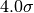
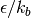
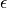

Reference Documentation¶
Modules within the mdhandle package can be sub-divided into categories based on their functional role. In the reference guide that follows each module is listed within its functional group.
A similar organizational idea is also used within the source code.
Container Objects¶
snap¶
Continer for holding information on a single simulation snapshot.
- class mdhandle.snap.Snap(fn, dataset_name='rawSimResults', is_new_data=False, verbose=False)[source]¶
A class to hold a single snapshot (i.e. heavy atomwise data and light metadata).
Parameters : fn : string
Filename of HDF file containing simulation snapshot data.
dataset_name : string, [default=’rawSimResults’]
Name of data set within HDF file. Datasets are stored at the root of the HDF file. Default dataest 'rawSimResults' should always be present and contains raw atomwise output.
is_new_data : boolean, [default=False]
Boolean flag. True if snap is house new data rather than reading existing dataset from disk.
verbose : boolean, [default=False]
Boolean flag for verbosity of user input/output.
See also
Attributes
filename string Absolute filename of snapshot. fn_base string filename without absolute path. directory string Absoulte path of containing directory. active_dataset_name string Name of active dataset within snapshot file. active_dataset pytables.tables.group.Group. Active dataset object. selections list of mdhandle.selection.Selection List of selection objects. meta dict Dictionary with all metadata in active dataset. sim_cell mdhandle.sim_cell.SimCell object. Contains geometric information about the simulation domain. col_mapping: dict Dictionary of all atom/grid scalars and metadata. vectors dict Dictionary of vectors and metadata. tensors dict Dictionary of tensors and metadata. symm_tensors dict Dictionary of symmetric tensors and metadata. verbose boolean Flag for user I/O verbosity. _mask boolean numpy.ndarray True entries mark atoms included in active selection. writer mdhandle.writers.xdmf.XDMFWriter XDMF writer object. Methods
add_selection(new_selection) Adds new selection object. reset_selections() Clears the list of selections objects. get_datasets() Returns list of datasets within HDF file. set_active_dataset(name, create=False) Sets active dataset from within HDF file. gather_data() Retrieves metadata from active dataset. dict_metadata() Returns dictionary of all metadata in active dataset. get_metadata(name) Returns single metadata item. get_scalar(name, raw_data=False) Returns scalar collection (i.e. scalar for each atom or grid point). get_vector(comp_names, raw_data=False) Returns vector collection. get_tensor(comp_names, raw_data=False) Returns tensor collection. get_symm_tensor(comp_names, raw_data=False) Returns symmetric tensor collection. _use_selections() Applies selections to atomwise (or grided) data. - _use_selections()[source]¶
Applies list of selections stored in self.selections.
Selections are applied sequentially from Snap.selections[0], Snap.selections[1], ... to filter atoms within the snapshot.
The result of all selection is stored in Snap._mask, which is an array with a value of either 0 (unselected) or 1 (selected), which is used to filter any atomwise results (i.e. scalar, vector, tensor collections)
- set_active_dataset(name, reset_meta=False, create_new=False)[source]¶
Sets the active dataset within HDF file. The active dataset is the one available via other Snap methods. Dataset is selected by name at root (‘/’) of HDF file.
Parameters : name : string
Name of active dataset.
create : boolean
Boolean flag used for creating a new dataset.
reset_meta : boolean
If True, metadata and selections in snap are reset.
- get_datasets()[source]¶
Walks the root of related HDF file and return list of datasets.
Returns : datasets : list
List of datasets contained within Snap file.
- gather_data()[source]¶
Gather and calculate metadata from active dataset.
Also used to ensure that the HDF file associated with the snapshot is active.
- get_metadata(name)[source]¶
Returns value for matadata item associated with name. Data is retreived from the current active dataset.
Parameters : name : string
Name of metadata item to retrieve.
Returns : Metadata item associated with ``name``. :
- dict_metadata()[source]¶
Returns dictionary indexed by property name, for all matadata stored in HDF file for snapshot.
Returns : meta_dict : dict
Dictionary of string-value` pairs for all metadata associated with the active snapshot.
- add_selection(new_selection)[source]¶
Adds a mdhandle.properties.selection.Selection object to snapshot.
Selections are stored in a list at Snap.selections and act to sequentially select sub-sets of atoms within the snapshot.
Parameters : new_selection : mdhandle.properties.selection.Selection
Selection object object used to choose a sub-set of atoms within the snapshot.
- good_grid()[source]¶
If the active dataset in HDF file is a known type as stored in mdhandle.settings.IMPLEMENTED_GRIDS, returns True.
- get_scalar(name, raw_data=False)[source]¶
Gets and returns atwomwise scalar (numpy.ndarray, (Nx1)).
If raw_data is False and selections contains active selections, the data associated with the selected atoms is returned.
Parameters : name : string
Name of scalar in HDF file.
raw_data : boolean, [default=False]
If True, avoids the use of any existing selections.
Returns : scalar : numpy.ndarray, (Nx1)
- get_vector(comp_names, raw_data=False)[source]¶
Gets and returns atwomwise vector collection (numpy.ndarray, (Nx3)).
If raw_data is False and selections contains active selections, the data associated with the selected atoms is returned.
Parameters : comp_names : iterable
List of names of scalar vector components in HDF file.
raw_data : boolean, [default=False]
If True, avoids the use of any existing selections.
Returns : vec : numpy.ndarray, (Nx3)
- get_tensor(comp_names, raw_data=False)[source]¶
Gets and returns atwomwise tensor collection (numpy.ndarray, (Nx9)).
If raw_data is False and selections contains active selections, the data associated with the selected atoms is returned.
Parameters : comp_names : iterable
List of names of scalar tensor components in HDF file.
raw_data : boolean, [default=False]
Boolean flag, which if True avoids the use of any existing selections.
Returns : tens : numpy.ndarray, (Nx9)
- get_symm_tensor(comp_names, raw_data=False)[source]¶
Gets and returns atwomwise symmetric tensor collection (numpy.ndarray, (Nx6)).
If raw_data is False and selections contains active selections, the data associated with the selected atoms is returned.
Parameters : comp_names : iterable
List of names of scalar tensor components in HDF file.
raw_data : boolean, [default=False]
Boolean flag, which if True avoids the use of any existing selections.
Returns : symm_tens : numpy.ndarray, (Nx6)
simcontainer¶
Wrapper on set of simulation results. :class:SimContainer objects are used to hold and analyze a number of simulation snapshots.
- class mdhandle.simcontainer.SimContainer(flist, dataset_name='rawSimResults', verbose=False)[source]¶
Wrapper on set of simulation results. SimContainer objects are used to hold and analyze a number of simulation snapshots.
Parameters : flist : iterable
List of HDF files containing a snapshots of simulation restuls. Each file in flist becomes a Snap object.
dataset_name : string, [default=’rawSimResulsts’]
Name of dataset to activate within each snapshot. Default 'rawSimResulsts' is always present and contains the atomwise MD simulation output.
verbose : boolean, [default=False]
Boolean flag for the verbosity of user input/output.
Attributes
slist list List of mdhandle.snap.Snap objects in SimContainer. _max_open int Maximum number of files that can be open in Python. nsnaps int Number of snapshots within the SimContainer. times list List of time stamps for snaps within SimContainer. selections list List of selections active in snaps within SimContainer. active_dataset_name string Name of active dataset within snaps within SimContainer. meta dict Mapping of all simulation metadata. col_mapping dict Metadata mapping for scalar collections. vectors dict Dictionary of vector collections. tensors dict Dictionary of tensor collections. symm_tensors dict Dictionary of symmetric tensor collections. is_constant dict Dictionary sorring boolean values for constant metadata in container. sim_cell mdhandle.sim_cell.SimCell LAMMPS_log mdhandle.readers.log.Log LAMMPS log file handle. logger mdhandle.logger.Logger verbose boolean If True, verbose user I/O. Methods
- set_active_dataset(name, reset_meta=False)[source]¶
Sets active dataset in SimContainer and attached snapshots.
The active dataset is the one available via other methods. Dataset is selected by name at root (‘/’) of HDF file.
Parameters : name : string
Name of active dataset.
reset_meta : boolean
If True, metadata and selections in snap are reset.
- add_snap(new_name, test_constant=True)[source]¶
Adds a new snap to SimContainer object.
Parameters : new_name : string
File name of Snap file (HDF).
test_constant : boolean
If True, new snap is tested against existing snaps to see if has consistent properties (simulation domain dimensions, number of atoms, boundary conditions, unit type).
- gather_data(test_constant=True)[source]¶
Gathers metadata based on data from first snapshot (i.e. at SimContainer.slist[0])
Parameters : test_constant : boolean
If True, new snap is tested against existing snaps to see if has consistent properties (simulation domain dimensions, number of atoms, boundary conditions, unit type)
- slice_action_do(action, *args, **kwargs)[source]¶
Calls function named action on all attached snaps.
The snap method action is called immediately. This function does not produce a generator.
Note
This function can only act on the snaps in slist. Nothing is returned.
Parameters : action : string
Name of Snap function.
*args, *kwargs : :
Arguments and keyword arguments to action function.
- slice_action_return(action, *args, **kwargs)[source]¶
Returns generator containing snap method action.
To get the result of the snap method the generator must be used.
This method is required in cases where the return value is required, especially in cases where the returned value is large (i.e. atomwise or gridded datad)
- slice_generator()[source]¶
Returns generator used for iterating over Snap functions.
Note
Users must be careful to close the snap files as they are used in cases where the number of snaps within slist is larger than the maximum number of open files in Python.
- slice_metadata(prop_name)[source]¶
Get item of metadata from across entire SimContainer.
Parameters : prop_name : string
Name of Snap metadata property to get.
Returns : Ordered list of metadata value for each snapshot. :
- slice_heavy_scalar(scalar_name, raw_data=False)[source]¶
Get scalar collection (Nx1) from each attached Snap.
Parameters : scalar_name : string
Name of scalar attribute.
raw_data : boolean, [default=False]
If True, avoids the use of any existing selections.
Returns : scalar_gen : generator
Generator for iterating through snap files. Each call to the generator returns a scalar collection.
- slice_heavy_vector(comp_names, raw_data=False)[source]¶
Get vector collection (Nx3 numpy.ndarray) from each attached Snap.
Parameters : comp_names : iterate
Names of vector components for vector collection.
raw_data : boolean, [default=False]
If True, avoids the use of any existing selections.
Returns : vec_gen : generator
Generator for iterating through snap files. Each call to the generator returns a vector collection.
- slice_heavy_tensor(comp_names, raw_data=False)[source]¶
Get tensor collection (Nx9 numpy.ndarray) from each attached Snap.
Parameters : comp_names : iterable
Names of tensor components for tensor collection.
raw_data : boolean, [default=False]
If True, avoids the use of any existing selections.
Returns : tens_gen : generator
Generator for iterating through snap files. Each call to the generator returns a tensor collection.
- slice_heavy_symm_tensor(comp_names, raw_data=False)[source]¶
Get symmetic tensor collection (numpy.ndarray, (Nx6)) from each attached Snap.
Parameters : comp_names : iterable
Names of symmetric tensor components for symmetric tensor collection.
raw_data : boolean, [default=False]
If True, avoids the use of any existing selections.
Returns : symm_gen : generator
Generator for iterating through snap files. Each call to the generator returns a symmetric tensor collection.
- add_selection(new_selection)[source]¶
Adds a Selection object to SimContainer and contained Snap objects.
Selections are stored in a list at SimContainer.selections and act to sequentially select sub-sets of atoms.
Parameters : new_selection : mdhandle.properties.selection.Selection
Selection object object used to choose a sub-set of atoms within the snapshot.
- reset_selections()[source]¶
Removes all existing selections stored in self.selections from simContainer and contained mdhandle.snap.Snap objects.
See also
- constant_props_test()[source]¶
Runs collection of metadata tests.
The result of each test is stored in related SimContainer attribute.
:class:`SimContainer` items tested:
- Simulation cell dimensions.
- Number of atoms.
- Unit system.
- Attributes (scalars, vectors, tensors, symmetric tensors).
- box_constant_test()[source]¶
Tests if simulation box dimensions are constant for snaps within the SimContainer object.
Assumptions:
- Cuboid simulation domain.
- meta_constant_test(prop_name)[source]¶
Test if a piece of metadata is constant across set of snapshots.
Parameters : prop_name : string
Name of metadata property for testing.
Returns : test_value : boolean
Boolean flag for the value of the test.
- get_log(log_name)[source]¶
Attach LAMMPS log file to SimContainer.
Does not contain any logic to ensure that the log file is logically related to the snaps within the SimContainer.
Uses mdhandle.readers.log.Log.
Parameters : log_name : string
Absolute path to log file.
sim_cell¶
Handling information about unit cell and periodic boundary conditions.
Credits:
- MD-Tracks simulation cell implementation.
- class mdhandle.sim_cell.SimCell(axes, origin=array([ 0., 0., 0.]), pbc=array([ True, True, True], dtype=bool))[source]¶
Stores information regarding the simulation cell.
Assumptions:
- Simulation cell is orthogonal.
- Simulation cell is 3D.
- Simulation cell attributes are implictly read-only once created by __init__().
Parameters : axes : iterable of float
Elements of iterable define the size of the simulation cell in each coordinate direction. The simulation cell is assumed to be aligned to the fixed global XYZ coordinate directions.
origin : numpy.ndarray, (3x1)
Origin of simulation domain relative to fixed global XYZ coordinates.
pbc : boolean numpy.ndarray (3x1)
Defines the periodic boundary conditions along each coordinate direction. If True, PBC invoked at BOTH the positive and negative faces of simulation cell. [default=np.array[[True, True, True]]
Attributes
pbc numpy.ndarray, (3x1) Defines periodic boundary conditions along each coordinate direction. origin numpy.ndarray, (3x1) Low corner of simulation cell relative to fixed XYZ frame. volume float Volume of simulation cell. angles numpy.ndarray, (3x1) Corner angles of simulation cell. _matrix numpy.ndarray, (3x3) Diagonals are lenghts of the simulation cell. _boxL numpy.ndarray, (3x1) Length of full grid in each coordinate direction. _recip numpy.ndarray, (3x3) Inverse of _matrix. Methods
- to_fractional(full_xyz)[source]¶
Returns vector collection of positions coordinates converted to fractional values of basic simulation cell dimensions.
Parameters : full_xyz : numpy.ndarray (Nx3)
Vector collection of raw coordinates.
Returns : frac : numpy.ndarray (Nx3)
Returns vector stack of same size as full_xyz normalized by the size of the simulation cell
- from_fractional(fractional)[source]¶
Returns a vector collection with raw position coordinates from fractional positions normalized by simulation cell size.
Parameters : fractional : numpy.ndarray (shape=Nx3)
Vector collection of fractional coordinates.
Returns : pos : numpy.ndarray, (Nx3)
Returns vector stack of same size as fractional with positions back into unmodified absolute coordinates within the simulation cell
See also
- mic_distance(raw_distance)[source]¶
Enforce periodic boundary conditions and the minimum image convention on interatomic distance (raw_distance).
Parameters : raw_distance : numpy.ndarray, (Nx3)
Vector collection of raw interatomic distance measures.
Returns : min_img : numpy.ndarray, (Nx3)
Returns vector collection of the same shape as raw_distance with fractional coordinates ranging between [-0.5,0.5] to satisfy the minimum image convention.
- wrap_to_central(pos)[source]¶
Wraps a vector collection of atom positions into the central periodic image or primary simulation cell.
Parameters : pos : numpy.ndarray, (Nx3)
Vector collection of atom positions.
Returns : wrap : numpy.ndarray, (Nx3)
Returns atomic positions wrapped into the primary simulation cell, or periodic image.
material¶
Hold information about materials in MD simulation such as constants used to define interactomic potential functions.
- class mdhandle.material.LJMaterial(name, sigma, epsilon, mass)[source]¶
Class for Lennard-Jones 12-6 material.
All values should be given in non-dimensional LJ units. (See : mdhandle.units)
Parameters : name : string
Name of material (e.g. argon)
sigma : float
Molecular diameter. Corresponds to zero of LJ 12-6 function.
epsilon : float
Strength of LJ 12-6 interaction. Minimum potential energy of LJ 12-6 potential.
mass : float
Atomic mass.
Examples
>>> argon = ljMaterial('Ar', 3.405, 119.8, 39.95)
- class mdhandle.material.EAMMaterial(name, mass, lat_str=None, lat_cons=0.0)[source]¶
Class for embedded-atom-model (EAM) material
All values should be in either LAMMPS metal units, or SI.
Parameters : name : string
Name of material (e.g. ‘Platinum’)
mass : float
Atomic mass.
lat_str : string, [default=None]
Name of crystal structure. If not crystalline, set to None.
lat_cons : float, [default=0.0]
Lattice constant. EAM materials usually crystalline, so lattice constant applicable. If non-crystalline material, set to 0.0
Examples
>>> platinum = eamMaterial('Pt', 3.9200, 'fcc', 195.078,)
Data Manipulators¶
vectors¶
Provide utility functions for manipulating vector collections. In this context, vector collections are Nx3 numpy.ndarray where N is the total number of atoms.
Each row in the vector collection is a vector associated with the individual atom.
- mdhandle.vectors.grow(cont_vecs)[source]¶
Returns a vector collection grown from input list/tuple, or comma separated list of existing vector collections.
Parameters : cont_vecs : iterable of numpy.ndarray, (Nx3)
List or tuple of vector collections (numpy.ndarray, (Nx3)) to be stacked.
Returns : grown : numpy.ndarray ((N1 + N2 + ...)x3 )
Returns new vector collection (numpy.ndarray).
Examples
>>> a = np.array([[ 2.25313, 22.4553 , 11.1074 ], [ 149.999 , 4.65435, 21.8793 ]]) >>> b = np.array([ 153.184 , 7.48026, 143.027 ])
>>> grow((a,b)) array([[ 2.25313, 22.4553 , 11.1074 ], [ 149.999 , 4.65435, 21.8793 ], [ 153.184 , 7.48026, 143.027 ]])
- mdhandle.vectors.build_from_scalars(cont_vecs)[source]¶
Returns a vector collection (numpy.ndarray, (Nx3)) from its scalar components (numpy.ndarray, (Nx1)).
Parameters : cont_vecs : iterable of numpy.ndarray, (Nx1)
Collection of constituent scalars: (v0, v1, v2). Each scalar contains atomwise scalar value.
Returns : vec_coll : numpy.ndarray, (Nx3)
Returns vector collection in the form numpy.array([v_x, v_y, v_z]).
Examples
>>> v0 = np.array([ 2.25313, 149.999 , 34.7775 , 153.184 ]) >>> v1 = np.array([ 22.4553 , 4.65435, 59.7746 , 7.48026]) >>> v2 = np.array([ 11.1074, 21.8793, 82.1284, 143.027 ]) >>> build_from_scalars((v0, v1, v2)) array([[ 2.25313, 22.4553 , 11.1074 ], [ 149.999 , 4.65435, 21.8793 ], [ 34.7775 , 59.7746 , 82.1284 ], [ 153.184 , 7.48026 , 143.027 ]])
- mdhandle.vectors.magnitude(vec)[source]¶
Returns magnitude of each row within a vector collection.
Parameters : vec : numpy.ndarray, (Nx3)
Stack of vectors, a vector collection.
Returns : mags : numpy.ndarray, (Nx1)
Magnitude of each row vector within the vector collection.
Examples
>>> vec = np.array([[ 1 , 2 , 4], [ 2 , 3 , 6], ]) >>> magnitude(vec) array([4.5825, 7. ])
- mdhandle.vectors.sq_magnitude(vec)[source]¶
Returns the square magnitude of each row within a vector collection.
Parameters : vec : numpy.ndarray, (Nx3)
Stack of vectors, a vector collection.
Returns : sq_mag : numpy.ndarray (Nx1)
Square magnitude of each row vector within the vector collection.
Examples
>>> vec = np.array([[ 1 , 2 , 4], [ 2 , 3 , 6], ]) >>> sq_magnitude(vec) array([ 21., 49.])
- mdhandle.vectors.unit_vec(vec)[source]¶
Returns collection of unit vectors derived from input vector collection.
Parameters : vec : numpy.ndarray (Nx3)
Stack of vectors, a vector collection.
Returns : unit_v : numpy.ndarray, (Nx3)
Collection of unit vectors.
Examples
>>> vec = array([[ 1 , 2 , 4], [ 2 , 3 , 6], ]) >>> unit_vec(vec) array([[ 0.218..., 0.436..., 0.872...], [ 0.286..., 0.428..., 0.857...], ])
- mdhandle.vectors.vector_type_conv(vec, new_dtype)[source]¶
Converts vector collection into required data format. Currently converts only to: float, int
Parameters : vec : numpy.ndarray, (Nx3)
Vector collection.
new_dtype : string, {‘int’ | ‘float’ }
Desired type of data.
Returns : vec : numpy.ndarray (Nx3)
vec with modified dtype.
tensors¶
Provides utility functions for manipulating tensor collections. In this context, tensor collections are (Nx6) or (Nx9) numpy.arrays where each row is a tensor associated with an individual atom.
- The order of components in a 6-component symmmetric tensors is:
00, 01, 02, 11, 12, 22
xx, xy, xz, yy, yz, zz
- The order of components in a 9-component general tensor is:
00, 01, 02, 10, 11, 12, 20 21, 22
xx, xy, xz, yx, yy, yz, zx, zy, zz
- mdhandle.tensors.grow(cont_tens)[source]¶
Returns a tensor collection grown from input list/tuple, or comma separated list of existing vector collections.
Parameters : cont_tens : iterable of numpy.ndarray, (Nx6 or Nx9)
List or tuple of tensor collections to be stacked.
Returns : grown : numpy.ndarray, ((N1 + N2 + ...)x6) or ((N1 + N2 + ...)x9)
Returns new tensor collection.
See also
- mdhandle.tensors.build_from_scalars(cont_tens)[source]¶
Returns a tensor collection ((Nx6) or (Nx9) numpy.ndarray) from its scalar components ((Nx1) numpy.ndarray).
Parameters : cont_vecs : iterable of numpy.ndarray, (Nx1)
Collection of constituent scalars: (t0, t1, t2, t3, t4, t5, ...). Each scalar contains atomwise scalar.
Returns : new_tens : numpy.ndarray, (Nx6) or (Nx9)
Returns tensor collection in the form numpy.array([t0, t1, t2, t3, t4, t5, ... ]).
Property Calculations¶
selection¶
Enable the ability to easily create selections of a sub-set of atoms within LAMMPS output.
Functions within selection are function factories that produce masking functions that are used to define a selection object. They are passed as the masking_function argument when creating Selection.
Users can add additional new selection functions to selection, or within their own code which can be used as the masking_function for a Selection so long as they conform to the style seen in the native selection functions defined in selection.
- class mdhandle.properties.selection.Selection(masking_function, temporal_lock=True)[source]¶
Class used for selecting a subset of atoms from a snap.
Parameters : masking_function : callable
Callable taking mdhandle.snap.Snap as input. Must return a boolean numpy.ndarray (Nx1).
Should take a single argument - the Snap object on which the selection is applied.
temporal_lock : boolean, [default=True]
If True, selection remains fixed once it is defined.
Attributes
temporal_lock boolean If True, Selection.masked only defined once by first call. masking_function callable Function used to define the selection. masked numpy.ndarray Result from mask operation. Atoms with True entries are included. first_time boolean If True, Selection.calculate_mask() has not been called. Methods
- calculate_mask(snap)[source]¶
Creates mask for selecting atoms.
Wrapper for masking_function with logic for controlling changes via Selection.temporal_lock.
Parameters : snap : mdhandle.snap.Snap
Snap object for mask.
Returns : self.masked : Boolean numpy.ndarray (Nx1)
Atoms with true entries are included in the selection.
- static selection.box(corner_low, dimensions, inside=True)¶
Function factory for selecting atoms in a box defined by low corner anddimensions.
Box is aligned to coordinate directions.
Parameters : corner_low : numpy.ndarray, (3x1)
Coordinates of the low corner of the box.
dimensions : numpy.ndarray, (3x1)
Length of box in three coordinate directions.
inside : boolean, [default=True]
If True, selects atoms inside the box.
Returns : masking_function : callable
Function for selecting atoms with coordinates inside 3D box.
- static selection.sphere(centre, radius, inside=True)¶
Factory function for selection of atoms inside a sphere defined by centre and radius.
Parameters : centre : numpy.ndarray, (3x1)
Coordinates of the centre of the sphere.
radius : float
Radius of the sphere.
inside : boolean, [default=True]
If True, selects atoms inside the sphere.
Returns : masking_function : callable
Function for selecting atoms with coordinates inside 3D sphere.
- static selection.liquid_only(threshold, fluid_atom_type, coord_name='coord')¶
Selects liquid atoms using coordination number. Liquid atoms have coordination numbers larger than the threshold.
Parameters : threshold : int
Lower threshold on coordination number for liquid. Typical value: 40 for simulation with cutoff of .
fluid_atom_type : iterable
Types of atoms which are fluids in the simulation. Data type of entry should be ‘int’ If only a single atom type is desired: fluid_atom_type=[1,]
coord_name : string, [default=’coord’]
Name of coordination number in snap.
Returns : masking_function : callable
Function for selecting liquid atoms.
- static selection.fluid_only(fluid_atom_types)¶
Function factory for selecting only fluid atoms.
Parameters : fluid_atom_type : iterable
Types of atoms which are fluids in the simulation. Data type of entry should be 'int' If only a single atom type is desired: fluid_atom_type=[1,]
Returns : masking_function : callable
Function for selecting fluid atoms.
- static selection.coordinate_less_than(coord_name, threshold)¶
Function factory for selectino of atoms with coordinate less than a given value.
Parameters : coord_name : string, { ‘x’ | ‘y’ | ‘z’}
Name of coordinate to be tested.
threshold : float
Maximum value of coordinate
Returns : masking_function : callable
Function for selecting atoms with coordinates less than threshold.
- static selection.coordinate_greater_than(coord_name, threshold)¶
Function factory for selection of atoms with coordinates greater than a given value
Parameters : coord_name : string, { ‘x’ | ‘y’ | ‘z’}
Name of coordinate to be tested.
threshold : float
Minimum value of coordinate
Returns : masking_function : callable
Function for selecting atoms with coordinates greater than threshold.
- static selection.opposite_selection(filter_function_input)¶
Factory function inverting existing selection mask.
Parameters : filter_function_input : callable
Existing selection function.
Returns : reversed_filter_function : callable
Inverted filter_function_input.
snap_properties¶
Calculates summary properties for a simulation snap.
- class mdhandle.properties.snap_properties.SnapProperties(snap)[source]¶
Performs summary calculations on snap file (e.g. scalar pressure, mass density, etc.).
Unlike calculations in binned_properties results are for all atoms in the snap (with any selections applied) and are not calculated on a grid.
Parameters : snap : mdhandle.snap.Snap
Snap object used for calculations.
Attributes
snap mdhandle.snap.Snap volume float Volume occupied by snap atoms. epair float Total epair in snap. ke float Total kinetic energy in snap. count float Total number of atoms in snap. mass float Total mass in snap. force float Total force on snap atoms. com numpy.ndarray, (3x1) Snap centre of mass position. com_velocity numpy.ndarray, (3x1) Snap centre of mass velocity. temp float Snap temperature. stress numpy.ndarray, (6,1) Total stress tensor on snap. pressure float Scalar pressure acting on snap. _KBOLTZ float Boltzman constant in units consistent with SnapProperties.snap. Methods
- set_volume(volume)[source]¶
Sets the volume over which density calculations are defined.
May be defined by user based on another calculation, but cannot be easily set by maximum coordinates of atoms within snap because may be large amounts of empty space within the system.
Parameters : volume : float
Volume of system used for density calculations. Units should be consistent with snap units.
- get_volume_density(prop_name)[source]¶
Calculates the density of given prop_name per unit volume (SnapProperties.volume).
Parameters : prop_name : string
Name of snap property.
Returns : vol_dens : float
Volume density of total snap property provided. Returns 0. if prop_name doesn’t exist in SnapProperties`.
- get_mass_norm(prop_name)[source]¶
Calculates the value of given property per-unit-mass in the snap.
Parameters : prop_name : string
Name of snap property.
Returns : mass_norm : float
Per-unit-mass value of property provided. Returns 0. if prop_name doesn’t exist in SnapProperties`.
- epair_total(epair_name='epair')[source]¶
Total potential energy (epair) in snap.
Parameters : epair_name : string, [default=’epair’]
Name of epair within snap.
Returns : self.epair : float
Total potential energy.
- count_total()[source]¶
Counts number of atoms in snap.
Returns : self.count : int
Total number of atoms in snap.
- ke_total(from_velocity=False, ke_name='ke', velocity_name='velocity', mass_name='mass')[source]¶
Total kinetic energy in snap.
Parameters : from_velocity : boolean [default=’False’]
Calculate kinetic energy from atomwise velocity.
ke_name : string, [default=’ke’]
Name of per-atom kinetic energy in snap.
velocity_name : string [default=’velocity’]
Name of atomwise velocity in snap.
mass_name : string [default=’mass’]
Name of atomwise mass in snap.
Returns : self.ke : float
Total kinetic energy.
- force_total()[source]¶
Net force on snap.
Returns : self.force : numpy.ndarray, (3x1)
Net force on snap.
- other_total(prop_name)[source]¶
Total of a general scalar property.
Do not use for vector properties.
Parameters : prop_name : string
Name of property to be totaled.
Returns : other_total : float
Total value in snap. If prop_name does not exist in SnapProperties.snap returns 0..
- temp_total(correct=True)[source]¶
Calculates temperature of snap.
Parameters : correct : boolean, [default=True]
If True, streaming velocity is removed from the temperature calculation
Returns : self.temp : float
Temperature of snap.
- stress_total()[source]¶
Total stress tensor on snap.
Returns : self.stress : numpy.ndarray, (6x1)
Total stress tensor on snap, or 0. if run into problems.
- pressure_total()[source]¶
Scalar pressure in snap based on stress tensor.
Returns : self.pressure : float
Scalar pressure in snap or 0. if ran into problems.
- com_pos_vel(weight='mass')[source]¶
Calculates the position and centre of mass (CoM) of snap.
Atomic position can be weighted by mass or by any other atomwise scalar.
Parameters : weight : string
Name of scalar used to weigh atom positions in calculation of centre of mass. [default=’mass’]
Returns : com : numpy.ndarray
Snap centre of mass position.
com_velocity : numpy.ndarray
Snap centre of mass velocity.
atom_properties¶
Calculates atomwise properties based on existing simulation results.
Returns atom-wise results for property calculation
Credits:
- Inspiration for virial and stress calc from LAMMPS source.
- class mdhandle.properties.atom_properties.AtomCalc(snap, calcs=None, wrap=True)[source]¶
Abstract base class for atomwise calculations.
Parameters : snap : mdhandle.snap.Snap
Snap object to be processed.
calcs : iterable
List of calculations to perform. Each sub-class must supply its own calculation functions which are run either directly, or via the run() method.
The list of available calculations is in _all_calcs. If calcs is None, all implemented calculations are done. [default=None]
wrap : boolean
If True, atom coordinates are wrapped back to primary simulation domain, subject to PBC. [default=True]
Attributes
snap mdhandle.snap.Snap Must be 'atoms' dataset. xyz numpy.ndarray Atomwise positions within AtomCalc.snap. scalars dict Dictionary of scalars and associated metadata produced by calculations. vectors dict Dictionary of vectors and associated metadata produced by calculations. symm_tensors dict Dictionary of symmetric tensors and associated metadata produced by calculations. tensors dict Dictionary of tensors and associated metadata produced by calculations. calcs dict Stores input for calculations to run. Stages calculation names until processed by``setup_calculations()``. to_calc dict Dictionary of calculations performed by AtomCalc:run(). results dict Dictionary used for storing result of calculations by name. _all_calcs dict Dictionary sotring metadata of all implemented calculations. Methods
add_new_calc(name, dtype=’float’, collection_type=’scalars’) Adds metadata for new calculation. Calculation function itself must be monkey patched into AtomCalc and have a name in style _calc_NAME() setup_calculations() Runs configurations required before calling AtomCalc.run(). run() Runs all calculations stored in AtomCalc.to_calc. Must be overridden in sub-classes of AtomCalc. - add_new_calc(name, dtype='float', collection_type='scalars', location='Node')[source]¶
Adds information about the output of a new calculation type beyond the default set.
Implementation of new calculation is done by manually monkeypatching function with name in style “_calc_NAME” into existing object.
Parameters : name : string
Name of new calculation.
dtype : string, {‘int’ | ‘float’}, [default=’float’]
Data type for calculation.
collection_type : string, [default=’scalars’]
Defines the shape of the output (i.e. vectors: Nx3) {‘scalars’ | ‘vectors’ | ‘tensors’ | ‘symm_tensors’}
location : string, [default=’Node’]
For atomwise properties as calculated by subclasses of AtomCalc, only ‘Node’ is relevant.
- class mdhandle.properties.atom_properties.NonLocal(snap, cutoff, calcs=None, wrap=True)[source]¶
Bases: mdhandle.properties.atom_properties.AtomCalc
Class for calculating atomwise properties which are dependent on infomation gatherered from all atoms within the snap. (e.g. potential energy, coordination number.)
Calculation of interatomic distance (NonLocal._calc_diff) assumes local effect so that uses only nearest neighbours. The resulting interatomic distance is limited to the cutoff radius and is modified to conform with the minimum image convention.
Due to high cost of calculations - should only be run using run() rather than directly calling individual calculation functions (e.g. _calc_epair())
Note
Interatomic interaction is calculated using 12-6 Lennard-Jones potential and therefore must have units style ‘lj’ (non-dimensional Lennard-Jones units.).
Parameters : snap : mdhandle.snap.Snap
Snap object to be processed. Must have units style, ‘lj’
cutoff : float
Cutoff radius for interatomic interaction.
calcs : iterable, [default=None]
List of calculations to perform.
Implemented calculations available: ['coord', 'epair', 'virial', 'force', 'stress'].
If calcs is None, all implemented calculations are done.
wrap : boolean, [default=True]
If True, atom coordinates are wrapped back to primary simulation domain, subject to PBC.
Attributes
cutoff float Cutoff for LJ 12-6 interatomic interaction. binning mdhandle.properties.cell_decomposition.SparseBinning Cell decomposition of atoms for efficient interaction calculation. results dict All results from calculations in NonLocal.to_calc are stored in dict organized by name. Results also stored in attributes of NonLocal. Methods
setup_calculations() Runs configuration to setup for calculation. run() Runs all calculations in NonLocal.to_calc. _calc_epair(atom_id, diff, diff_mag, any_there) Calculates interatomic potential energy via LJ 12-6. _calc_diff(atom_id, diff, diff_mag, any_there) Calculates the distance (vector and magnitude) to an atom. _calc_coord(atom_id, diff, diff_mag, any_there) Calculates coordination number up to cutoff. _calc_force(atom_id, diff, diff_mag, any_there) Calculates total interatomic force on an atom via LJ 12-6. _calc_virial(atom_id, diff, diff_mag, any_there) Calculates virial on an atom via LJ 12-6. _calc_stress(atom_id, diff, diff_mag, any_there) Calculates atomwise stress tensor for an atom via LJ 12-6. - _calc_epair(atom_id, diff, diff_mag, any_there)[source]¶
Calculate the kinetic energy of atom atom_id.
Implementation is limited to monotomic system. Additional terms needed for bonded contributions.
Also not applicable to long-range forces (e.g. electrostatics), which cannot be calculated by direct summation under the minimum image convention.
Parameters : atom_id : int
Atom index in snap.
diff : numpy.ndarray (Nx3, ‘float’)
Vector distance between atom_id and all other atoms. Distance is adjusted to conform with the minimum image conv.
diff_mag : numpy.ndarray (Nx1, ‘float’ )
Distance magnitude between atom_id and all other atoms. Distance is adjusted to conform with the minimum image conv.
any_there : boolean
If True, at least one atom is within the cutoff distance.
Returns : epair : float
Scalar value for total potential energy of atom atom_id.
- _calc_coord(atom_id, diff, diff_mag, any_there)[source]¶
Calculate the coordination number of atom atom_id.
As implemented coordination number produced is the total coordination number due to all atoms in the system regardless of type.
Parameters : atom_id : int
Atom index in snap.
diff : numpy.ndarray (Nx3, ‘float’)
Vector distance between atom_id and all other atoms. Distance is adjusted to conform with the minimum image conv.
diff_mag : numpy.ndarray (Nx1, ‘float’ )
Distance magnitude between atom_id and all other atoms. Distance is adjusted to conform with the minimum image conv.
any_there : boolean
If True, at least one atom is within the cutoff distance.
Returns : coord : float
Scalar value for coordination number of atom atom_id.
- _calc_force(atom_id, diff, diff_mag, any_there)[source]¶
Calculate the net force due to 12-6 Lennard-Jones interaction on atom atom_id.
Implementation is limited to monotomic system. Additional terms needed for bonded contributions.
Calculation algorithm not applicable to long-range forces (e.g. electrostatics), which cannot be calculated by direct summation under the minimum image convention.
Parameters : atom_id : int
Atom index in snap.
diff : numpy.ndarray (Nx3, ‘float’)
Vector distance between atom_id and all other atoms. Distance is adjusted to conform with the minimum image conv.
diff_mag : numpy.ndarray (Nx1, ‘float’ )
Distance magnitude between atom_id and all other atoms. Distance is adjusted to conform with the minimum image conv.
any_there : boolean
If True, at least one atom is within the cutoff distance.
Returns : force : numpy.ndarray, (1x3)
Net force on atom atom_id.
- _calc_virial(atom_id, diff, diff_mag, any_there)[source]¶
Calculate the virial on atom atom_id based on LJ 12-6 interaction.
Implementation is limited to monotomic system. Additional terms needed for bonded contributions.
Calculation algorithm not applicable to long-range forces (e.g. electrostatics), which cannot be calculated by direct summation under the minimum image convention.
Parameters : atom_id : int
Atom index in snap.
diff : numpy.ndarray (Nx3, ‘float’)
Vector distance between atom_id and all other atoms. Distance is adjusted to conform with the minimum image conv.
diff_mag : numpy.ndarray (Nx1, ‘float’ )
Distance magnitude between atom_id and all other atoms. Distance is adjusted to conform with the minimum image conv.
any_there : boolean
If True, at least one atom is within the cutoff distance.
Returns : virial : numpy.ndarray, (1x6)
Virial (symmetric tensor) of atom atom_id.
- _calc_stress(atom_id, diff, diff_mag, any_there)[source]¶
Calculates the per-atom stress tensor as defined in the LAMMPS MD software package based on 12-6 Lennard-Jones interaction.
In this case the per-atom stress is stress*per_atom_volume. Therefore, to calculate the scalar pressure from the trace the result should be divided by (dim*volume) to obtain the pressure, where dim is the dimensionality of the system.
Implementation is limited to monotomic system. Additional terms needed for bonded contributions or constraints on atom motion.
Calculation algorithm not applicable to long-range forces (e.g. electrostatics), which cannot be calculated by direct summation under the minimum image convention.
See: http://lammps.sandia.gov/doc/compute_stress_atom.html
Parameters : atom_id : int
Atom index in snap.
diff : numpy.ndarray (Nx3, ‘float’)
Vector distance between atom_id and all other atoms. Distance is adjusted to conform with the minimum image conv.
diff_mag : numpy.ndarray (Nx1, ‘float’ )
Distance magnitude between atom_id and all other atoms. Distance is adjusted to conform with the minimum image conv.
any_there : boolean
If True, at least one atom is within the cutoff distance.
Returns : stress : numpy.ndarray, (1x6)
Atomwise stress (symmetric tensor) of atom atom_id.
- _calc_diff(atom_id)[source]¶
Calculates the distance (magnitude and vector) between atom_id and other atoms in the snap.
Calculated distance is limited by NonLocalLammps.cutoff.
Resuts are stored in NonLocal.diff and NonLocal.diff_mag.
NxN difference arrays are not calculated or stored due to large memory requirements.
Parameters : atom_id : int
Index number of central atom in distance calculation. (i.e. all distances are relative to its position.)
Returns : diff : numpy.ndarray, (Nx3)
Vector distance betweeen atom atom_id and all other atoms within the cutoff distance.
diff_mag : numpy.ndarray, (N,1)
Scalar distance betweeen atom atom_id and all other atoms within the cutoff distance.
any_there : boolean
If True, there is at least one atom within the cutoff radius of atom atom_id.
- setup_calculations()[source]¶
Perform initialization necessary for running calculations.
Must also be called if any additional new calculations are added at runtime.
Warning
New results arrays are created each time this method is called. Information from any previous runs is lost.
- run(mass_name='mass', velocity_name='velocity')[source]¶
Run all calculations as defined by NonLocal.to_calc.
Makes use of cell decomposition to reduce work in looking for nearest neighbours.
Parameters : mass_name : string, [default=’mass’]
Name for atomwise mass vector.
velocity_name : string, [default=’velocity’]
Name for atomwise velocity vector collection.
- add_new_calc(name, dtype='float', collection_type='scalars', location='Node')¶
Adds information about the output of a new calculation type beyond the default set.
Implementation of new calculation is done by manually monkeypatching function with name in style “_calc_NAME” into existing object.
Parameters : name : string
Name of new calculation.
dtype : string, {‘int’ | ‘float’}, [default=’float’]
Data type for calculation.
collection_type : string, [default=’scalars’]
Defines the shape of the output (i.e. vectors: Nx3) {‘scalars’ | ‘vectors’ | ‘tensors’ | ‘symm_tensors’}
location : string, [default=’Node’]
For atomwise properties as calculated by subclasses of AtomCalc, only ‘Node’ is relevant.
- class mdhandle.properties.atom_properties.NonLocalLammps(snap, input_fn, cutoff, calcs=None, wrap=True, lammps_log='lammps_mdhandle.log')[source]¶
Bases: mdhandle.properties.atom_properties.AtomCalc
Class used for calculating non-local properties using a Python wrapped LAMMPS library to perform the calculation.
Non-local properties are atomwise properties like stress and potential energy which are a function of all other atoms in the simulation.
Calculation is restricted to properties which are produced by LAMMPS compute commands.
LAMMPS is run for a single timestep to perform the calculation. Therefore, this operation is intended for use if a calculation was not done at the original simulation runtime.
Current implementation uses a modified serial version of LAMMPS built as a library.
Parameters : snap : mdhandle.snap.Snap
Snap object used for calculation.
input_fn : string
LAMMPS input file for controlling LAMMPS library. LAMMPS input file is written separately as per format specified by the LAMMPS user manual. Input file should contain reference to LAMMPS data file which contains the atom positions and velocities.
calcs : iterable, [default=None ]
List of property names to calculate. If calcs is None, then all implemented calculations are done.
Implemented calculations: ['coord', 'epair', 'force', 'stress'] which must match the name of LAMMPS compute.
To add additional calculaion types must add additional item using NonLocalLammps.add_new_calc() method.
lammps_log : string, [default=’lammps_mdhandle.log’]
Log file name for LAMMPS run.
Attributes
input_fn string LAMMPS input file name used to setup calculations. lammps_log string LAMMPS log name. cutoff float Cutoff associated with interatomic interaction. results dict All results from calculations in NonLocalLammps.to_calc are stored in dict organized by name. Results also stored in attributes of NonLocalLammps. Methods
add_new_calc(name, dtype=’float’, collection_type=’scalars’) Add metadata for new calculation function. Overrides completely AtomCalc.add_new_calc(). run() Runs all calculations stored in NonLocalLammps.to_calc. - add_new_calc(name, dtype='float', collection_type='scalars', location='Node')[source]¶
Adds information about the output of a new calculation type beyond the default set: ['coord', 'epair', 'force', 'stress']
For NonLocalLammps, new calculations are defined within the LAMMPS data file rather than via a NonLocalLammps method. Therefore, the name must match the name of the LAMMPS compute.
Parameters : name : string
Name of new calculation. Must be the name of the LAMMPS compute.
dtype : string, {‘int’ | ‘float’}, [default=’float’]
Data type for calculation.
collection_type : string, [default=’scalars’]
Defines the shape of the output (i.e. vectors: Nx3) {‘scalars’ | ‘vectors’ | ‘tensors’ | ‘symm_tensors’}
location : string, [default=’Node’]
For atomwise properties as calculated by subclasses of AtomCalc, only ‘Node’ is relevant.
- run()[source]¶
Launches LAMMPS based calculation defined by requested calculations and the LAMMPS input file (NonLocalLammps.input_fn).
Result of calculations stored in NonLocalLammps.results and NonLocalLammps attribute with name corresponding to the calculation name stored in NonLocalLammps.calcs.
- setup_calculations()¶
Perform initialization necessary for running calculations.
Must also be called if any additional new calculations are added at runtime.
Warning: New results dict is created each time this method is called. Information from any previous runs is lost.
- class mdhandle.properties.atom_properties.Local(snap, calcs=None, wrap=True)[source]¶
Bases: mdhandle.properties.atom_properties.AtomCalc
Calculates atomwise quantities which are only dependent on the properties of each individual atom (e.g. atomwise kinetic energy).
Parameters : snap : mdhandle.snap.Snap
Snap object to be processed.
calcs : iterable
List of local atomwise property calculations to perform. Implemented calculations: ['ke', ] If calcs is None, all available calculations are done. [default=None]
wrap : boolean
If True, atom coordinates are wrapped back into the primary simullation domain, subject to PBC.
Attributes
results dict Results from calculations stored in Local.results and in attributes of Local. Methods
run() Runs all calculations stored in Local.to_calc. _calc_ke() Calculates atomiwise kinetic energy. - _calc_ke()[source]¶
Calculates atomwise kinetic energy from atomwise mass and velocity.
Returns : Atomwise kinetic energy. :
Result is also stored in Local.ke and Local.results['ke']
- add_new_calc(name, dtype='float', collection_type='scalars', location='Node')¶
Adds information about the output of a new calculation type beyond the default set.
Implementation of new calculation is done by manually monkeypatching function with name in style “_calc_NAME” into existing object.
Parameters : name : string
Name of new calculation.
dtype : string, {‘int’ | ‘float’}, [default=’float’]
Data type for calculation.
collection_type : string, [default=’scalars’]
Defines the shape of the output (i.e. vectors: Nx3) {‘scalars’ | ‘vectors’ | ‘tensors’ | ‘symm_tensors’}
location : string, [default=’Node’]
For atomwise properties as calculated by subclasses of AtomCalc, only ‘Node’ is relevant.
- setup_calculations()¶
Perform initialization necessary for running calculations.
Must also be called if any additional new calculations are added at runtime.
Warning: New results dict is created each time this method is called. Information from any previous runs is lost.
binned_properties¶
Calculate average quantities on grid from atomiwise values. (e.g. local streaming velocity, local temperature)
Credits: Inspiration for binning algorithm from binning module in mol_mod module in MD-Tracks package
- class mdhandle.properties.binned_properties.Grid(snap, calcs=None, wrap=True, use_selection=True, location='Node')[source]¶
Abstract grid class.
Intent is to provide a useful base class for other grid types to inherit as the property calculations are not dependent on the grid type or the mapping function.
Parameters : snap : mdhandle.snap.Snap
Snap for calculating binned properties. Current data set in snap should be atomwise data (e.g. 'rawSimResults')
calcs : iterable, [default=None]
List of calculations to perform on the grid. If calcs is None, then all existing calculations are performed. Existing calculations :
['count', 'num_density', 'mass', 'mass_density', 'epair_count', 'coord_count', 'velocity', 'ke_count', 'force_count', 'temp', 'stress']
wrap : boolean, [default=True]
If True, coordinates in active data set in snap are wrapped to the central simulation cell subject to PBC.
selection : boolean, [default=True]
If True, selections are applied to snap object when getting atom coordinates.
location : string, [default=’Node’]
Grid location of calculated values. {‘Node’ } 'Cell' location not currently implemented.
Notes
- Each grid calculation (_calc_NAME()) stores its result in Grid attribute with name matching name in Grid.to_calc.
- See RectGrid._mapping_ngp() or RectGrid._mapping_cic() for basic requirements of a mapping function.
- Abstract methods and properties are dependent on the specific and concrete grid implemenation.
- Grid calculation shouldonly be run once per intance of Grid.
Attributes
snap mdhandle.snap.Snap Snap object. use_selection boolean If True, any selections in Grid.snap are used. atom_xyz numpy.ndarray Atomic positions for atoms in Grid.snap. calcs iterable List of calculation names (strings) to perform. to_calc dict List of calculations to do via Grid.run_calc() and metadata. scalars dict List of scalars produced by grid calcs. vectors dict List of vectors produced by grid calcs. tensors dict List of tensors produced by grid calcs. symm_tensors dict List of symmetric tensors produced by grid calcs. dtypes dict dtype of data produced by grid calcs locations dict Location of data produced by grid calcs types dict Type of output produced by grid calcs bins dict Dictionary storing result of sparse atoms-to-grid mapping. grid_to_atom numpy.ndarray Stores grid cells for each atom in the Grid.snap. _KBOLTZ float Boltzmann constant in units consistent with Grid.snap. _all_calcs dict List of all implemented grid calculations. _run_once dict If values are true - then grid calculation has been run. Methods
- _requirements(*list_reqs)[source]¶
Determines if gridded property exists and if not calculates it.
Used in grid calculations that are dependent on existence of other grid calculations.
Parameters : *list_reqs: strings :
Names of required grid properties. The name should match the grid properties attribute name (e.g. ‘epair’ for Grid.epair). Can supply many requirements as comma sparated arguments. (e.g. 'count', 'epair').
- _reverse_mapping(grid_value)[source]¶
Performs grid-to-atom mapping of grid_value.
Uses mapping information stored in Grid.grid_to_atoms when atom-to-grid mapping is originally performed.
Parameters : grid_value : array-like or float
Gridded data array. If a constant float is given, each atom is assigned the constant value.
Returns : atom_value : numpy.ndarray
Atomwise array resulting from grid-to-atom mapping of grid_value.
- _sum_from_atom_value(atom_value)[source]¶
Perform summation of atomwise values on the grid for arbitrary atomwise data (atom_value).
Utility function used in other grid calculations, _calc_mass().
For example, to count the number of atoms at the gird points (or grid cells), Grid._sum_from_atom_value(1.0)() or to calculate the mass of each grid point, Grid._sum_from_atom_value(atom_masses)().
Parameters : atom_value : array-like or float
Atomwise data object to be summed according to grid weighting at each grid point or cell.
- _calc_count()[source]¶
Calculate the atom count on grid.
Also calls tests on grid coverage: Grid._calc_coverage().
Returns : count : numpy.ndarray
Number of atoms at each grid point. Also stored in Grid.results['count'] and Grid.count in Grid.run().
- _num_atoms()[source]¶
Calculates the total number of atoms on grid.
Note
The result, stored in Grid.num_atoms, is not a grid array and is not stored in Grid.coverage.results.
- _coverage()[source]¶
Test whether atom count on the grid captures all atoms in the snap by comparing to number of atoms in Grid.snap (i.e. metadata stored on disk).
The result is True if the number of atoms in grid is equal to the total number of atoms in the snap.
Note
The result, stored in Grid.coverage, is not a grid array and is not stored in Grid.results.
- _calc_num_density()[source]¶
Calculates the gridded number density.
Returns : num_density : numpy.ndarray
Number density at each grid point. Also stored in Grid.results['num_density'] and Grid.num_density in Grid.run().
- _calc_mass()[source]¶
Calculates the mass of at each grid point (or grid cell).
Returns : mass : numpy.ndarray
Mass at each grid point or grid cell. Also stored in Grid.results['mass'] and Grid.mass in Grid.run().
- _calc_mass_density()[source]¶
Calculates mass density at each grid point (or grid cell).
Returns : mass_density : numpy.ndarray
Mass density at on the grid. Also stored in Grid.results['mass_density'] and Grid.mass_density in Grid.run().
- _calc_epair_count()[source]¶
Calculates the potential energy normalized by atom count on the grid.
Returns : epair_count : numpy.ndarray
Specific potential energy normalized by atom count on the grid. Also stored in Grid.results['epair_count'] and Grid.epair_count in Grid.run().
- _calc_coord_count()[source]¶
Calculates the coordintion number normalized by atom count on the grid.
Returns : coord_count : numpy.ndarray
Coordination number normalized by atom count on the grid. Also stored in Grid.results['coord_count'] and Grid.coord_count in Grid.run().
- _calc_velocity()[source]¶
Calculates the streaming velocity on the grid.
Returns : velocity : numpy.ndarray
Streaming velocity on the grid. Also stored in Grid.results['velocity'] and Grid.velocity in Grid.run().
- _calc_ke_count()[source]¶
Calculates the gridded kinetic energy normalized by the atom count.
Returns : ke_count : numpy.ndarray
Gridded kinetic energy normalized by atom count. Also stored in Grid.results['ke_count'] and Grid.ke_count in Grid.run().
- _calc_force_count()[source]¶
Calculates gridded net force normalized by the atom count.
Returns : force_count : numpy.ndarray
Gridded net force normalized by atom count. Also stored in Grid.results['force_count'] and Grid.force_count in Grid.run().
- _calc_temp()[source]¶
Calculates gridded temperature, corrected for the local streaming velocity.
Returns : temp : numpy.ndarray
Temperature corrected by local streaming velocity. Also stored in Grid.results['temp'] and Grid.temp in Grid.run().
- _calc_temp_uncorr()[source]¶
Calculates uncorrected gridded temperature.
Returns : temp_uncorr : numpy.ndarray
Gridded uncorrected temperature. Also stored in Grid.results['temp_uncorr'] and Grid.temp_uncorr in Grid.run().
- _calc_stress()[source]¶
Calculates the gridded stress tensor.
Note
The gridded stress tensor is based on spatial averaging of existing atomic stress tensor. Therefore, any streaming velocity correction must be applied in the original calculation of the atomic stress tensor.
Returns : stress : numpy.ndarray
Gridded stress tensor. Also stored in Grid.results['stress'] and Grid.stress in Grid.run().
- set_mapping_function(name)[source]¶
Parameters : name : string
Name of mapping function. Must match method within grid class (e.g. GridClass._mapping_NAME()):
- add_new_calc(calc_name, dtype='float', collection_type='scalars', location='Node', atomwise_name=None, run_setup=False)[source]¶
Adds metadata about the output of a new calculation type beyond the default set.
Implementation of new calculation is done by manually monkeypatching function with name in style _calc_NAME(...) into existing object.
Parameters : calc_name : string
Name of calculation.
dtype : string, {‘int’ | ‘float’}, [default=’float’]
Data type for calculation.
collection_type : string, [default=’scalars’]
Defines the shape of the output (i.e. vectors: Nx3) {‘scalars’ | ‘vectors’ | ‘tensors’ | ‘symm_tensors’}
location : string, [default=’Node’]
Grid location of calculated values. {‘Node’} 'Cell' location not currently implemented.
atomwise_name : dict, [default=None]
Name of atomwise property associated with grid calculation to allow for variation in the name stored for propety in Grid.snap. Each dict entry is formatted as:
'identifying_name':'name_in_snap'
run_setup : boolean, [default=False]
Runs Grid.setup_calculations() after new calculationi is added. Not recommended for use during initial setup such as in grid __init__.
- setup_calculations()[source]¶
Configures list of calculations to performs and list of scalars (Grid.scalars), vectors (Grid.vectors), tensors (Grid.tensors) and symmetric tensors (Grid.symm_tensors).
Moves requested calculations from Grid.calcs to Grid.to_calc so can be used by Grid.run_calc().
- change_default_name(calc_name, identifying_name, new_atomwise_name)[source]¶
Changes the default name of atomwise property used in calculation. (e.g. 'epair' is default for potential energy, but could be 'c_epair' depending on LAMMPS configuration).
See Grid._all_calcs for defaults.
Parameters : calc_name : string
Name of grid calculation.
identifying_name : string
Identifying name for atomwise property (i.e. ‘velocity’). This may not correspond with the name stored in Grid.snap.
new_atomwise_name : string
New name for related atomwise property.
- run_mapping(*args, **kwargs)[source]¶
Performs atom-to-grid mapping according to Grid.mapping_func().
The result of mapping is stored in Grid.bins.
Note
This method must be called before Grid.run_calc().
- class mdhandle.properties.binned_properties.RectGrid(snap, axes, grid_spacing=array([ 1., 1., 1.]), origin=array([ 0., 0., 0.]), offset=False, mapping='ngp', calcs=None, wrap=True, selection=True, location='Node')[source]¶
Bases: mdhandle.properties.binned_properties.Grid
Regular grid over retangular region.
Aligned to global coordinate system of the central simulation cell.
Sub-class of Grid.
Parameters : snap : mdhandle.snap.Snap
Snap object.
axes : iterable
Total length of grid in each coordinate direction (e.g. [5., 5., 5.])
grid_spacing : numpy.ndarray
Size of grid element in each coordinate direction.
origin : numpy.ndarray
Coordinate of low corner of grid.
offset : boolean
If True, the grid is offset so the first grid node is located at 0.5*:attr:RectGrid.grid_spacing from the RectGrid.origin rather than at the RectGrid.origin.
mapping : string
Name of atom-to-grid mapping function to match (e.g. 'ngp' –? _mapping_ngp() ).
calcs : iterable
List of grid calculations to perform. Names should match associated function _calc_NAME().
wrap : boolean, [default=True]
If True, coordinates in active data set in snap are wrapped to the central simulation cell subject to PBC.
selection : boolean, [default=True]
If True, selections are applied to snap object when getting atom coordinates.
location : string, [default=’Node’]
Grid location of calculated values. {‘Node’ } 'Cell' location not currently implemented.
Notes
- Each grid calculation (_calc_NAME()) stores its result in Grid attribute with name matching name in Grid.to_calc.
- See RectGrid._mapping_ngp() or RectGrid._mapping_cic() for basic requirements of a mapping function.
Attributes
origin numpy.ndarray Coordinate of low corner of grid. grid_spacing numpy.ndarray Size of grid element in each coordinate direction. snap mdhandle.snap.Snap object. use_selection : If True, any selections in Grid.snap are used. atom_xyz : Atomic positions for atoms in Grid.snap. calcs : List of calculations to perform, which is processed by Grid.setup_calculations() to generate Grid.to_calc. to_calc : List of calculations to do via Grid.run_calc(). scalars : List of scalars produced by grid calcs. vectors : List of vectors produced by grid calcs. tensors : List of tensors produced by grid calcs. symm_tensors : List of symmetric tensors produced by grid calcs. dtypes : dtype of data produced by grid calcs (i.e. ‘int’ or ‘float’) locations : Location of data produced by grid calcs (i.e. ‘Node’ or ‘Cell’). types : Type of output produced by grid calcs (i.e. ‘scalars’, ‘vectors’, ...) bins : Dictionary storing result of atoms-to-grid mapping. Similar to mdhandle.properties.cell_decomposition.SparseBinning.bins. Must be supplied by the atom-to-grid mapping function. grid_to_atom numpy.ndarray Stores grid cells for each atom in the Grid.snap. Must be supplied by the atom-to-grid mapping function. _KBOLTZ : Boltzmann constant in units consistent with Grid.snap. _all_calcs : List of all implemented grid calculations. _matrix numpy.ndarray (3x3) The lenghts of the grid along each coordinate direction are the diagonal of RectGrid._matrix. _boxL numpy.ndarray, (3x1) Length of full grid in each coordinate direction. Methods
- _mapping_ngp()[source]¶
Peforms nearest-grid-point (NGP) zeroth order atom-to-grid mapping.
The resulting mapping is stored in RectGrid.bins.
The reverse grid-to-atom mapping is stored in RectGrid.grid_to_atom.
References
- Hockney & Eastwood, Computer Simulation Using Particles, CRC Press, 1988.
- _mapping_cic()[source]¶
Peforms cell-in-cloud (CIC) first order atom-to-grid mapping.
The resulting mapping is stored in RectGrid.bins.
The reverse grid-to-atom mapping is stored in RectGrid.grid_to_atom.
References
- Hockney & Eastwood, Computer Simulation Using Particles, CRC Press, 1988.
- _requirements(*list_reqs)¶
Determines if gridded property exists and if not calculates it.
Used in grid calculations that are dependent on existence of other grid calculations.
Parameters : *list_reqs: strings :
Names of required grid properties. The name should match the grid properties attribute name (e.g. ‘epair’ for Grid.epair). Can supply many requirements as comma sparated arguments. (e.g. 'count', 'epair').
- _reverse_mapping(grid_value)¶
Performs grid-to-atom mapping of grid_value.
Uses mapping information stored in Grid.grid_to_atoms when atom-to-grid mapping is originally performed.
Parameters : grid_value : array-like or float
Gridded data array. If a constant float is given, each atom is assigned the constant value.
Returns : atom_value : numpy.ndarray
Atomwise array resulting from grid-to-atom mapping of grid_value.
- _sum_from_atom_value(atom_value)¶
Perform summation of atomwise values on the grid for arbitrary atomwise data (atom_value).
Utility function used in other grid calculations, _calc_mass().
For example, to count the number of atoms at the gird points (or grid cells), Grid._sum_from_atom_value(1.0)() or to calculate the mass of each grid point, Grid._sum_from_atom_value(atom_masses)().
Parameters : atom_value : array-like or float
Atomwise data object to be summed according to grid weighting at each grid point or cell.
- _calc_count()¶
Calculate the atom count on grid.
Also calls tests on grid coverage: Grid._calc_coverage().
Returns : count : numpy.ndarray
Number of atoms at each grid point. Also stored in Grid.results['count'] and Grid.count in Grid.run().
- _num_atoms()¶
Calculates the total number of atoms on grid.
Note
The result, stored in Grid.num_atoms, is not a grid array and is not stored in Grid.coverage.results.
- _coverage()¶
Test whether atom count on the grid captures all atoms in the snap by comparing to number of atoms in Grid.snap (i.e. metadata stored on disk).
The result is True if the number of atoms in grid is equal to the total number of atoms in the snap.
Note
The result, stored in Grid.coverage, is not a grid array and is not stored in Grid.results.
- _calc_num_density()¶
Calculates the gridded number density.
Returns : num_density : numpy.ndarray
Number density at each grid point. Also stored in Grid.results['num_density'] and Grid.num_density in Grid.run().
- _calc_mass()¶
Calculates the mass of at each grid point (or grid cell).
Returns : mass : numpy.ndarray
Mass at each grid point or grid cell. Also stored in Grid.results['mass'] and Grid.mass in Grid.run().
- _calc_mass_density()¶
Calculates mass density at each grid point (or grid cell).
Returns : mass_density : numpy.ndarray
Mass density at on the grid. Also stored in Grid.results['mass_density'] and Grid.mass_density in Grid.run().
- _calc_epair_count()¶
Calculates the potential energy normalized by atom count on the grid.
Returns : epair_count : numpy.ndarray
Specific potential energy normalized by atom count on the grid. Also stored in Grid.results['epair_count'] and Grid.epair_count in Grid.run().
- _calc_coord_count()¶
Calculates the coordintion number normalized by atom count on the grid.
Returns : coord_count : numpy.ndarray
Coordination number normalized by atom count on the grid. Also stored in Grid.results['coord_count'] and Grid.coord_count in Grid.run().
- _calc_velocity()¶
Calculates the streaming velocity on the grid.
Returns : velocity : numpy.ndarray
Streaming velocity on the grid. Also stored in Grid.results['velocity'] and Grid.velocity in Grid.run().
- _calc_ke_count()¶
Calculates the gridded kinetic energy normalized by the atom count.
Returns : ke_count : numpy.ndarray
Gridded kinetic energy normalized by atom count. Also stored in Grid.results['ke_count'] and Grid.ke_count in Grid.run().
- _calc_force_count()¶
Calculates gridded net force normalized by the atom count.
Returns : force_count : numpy.ndarray
Gridded net force normalized by atom count. Also stored in Grid.results['force_count'] and Grid.force_count in Grid.run().
- _calc_temp()¶
Calculates gridded temperature, corrected for the local streaming velocity.
Returns : temp : numpy.ndarray
Temperature corrected by local streaming velocity. Also stored in Grid.results['temp'] and Grid.temp in Grid.run().
- _calc_temp_uncorr()¶
Calculates uncorrected gridded temperature.
Returns : temp_uncorr : numpy.ndarray
Gridded uncorrected temperature. Also stored in Grid.results['temp_uncorr'] and Grid.temp_uncorr in Grid.run().
- _calc_stress()¶
Calculates the gridded stress tensor.
Note
The gridded stress tensor is based on spatial averaging of existing atomic stress tensor. Therefore, any streaming velocity correction must be applied in the original calculation of the atomic stress tensor.
Returns : stress : numpy.ndarray
Gridded stress tensor. Also stored in Grid.results['stress'] and Grid.stress in Grid.run().
- mapping_func()[source]¶
Dummy function to override abstract function in Grid base class so that class can be instantiated.
The actual mapping function is assigned by RectGrid.set_mapping_function().
- add_new_calc(calc_name, dtype='float', collection_type='scalars', location='Node', atomwise_name=None, run_setup=False)¶
Adds metadata about the output of a new calculation type beyond the default set.
Implementation of new calculation is done by manually monkeypatching function with name in style _calc_NAME(...) into existing object.
Parameters : calc_name : string
Name of calculation.
dtype : string, {‘int’ | ‘float’}, [default=’float’]
Data type for calculation.
collection_type : string, [default=’scalars’]
Defines the shape of the output (i.e. vectors: Nx3) {‘scalars’ | ‘vectors’ | ‘tensors’ | ‘symm_tensors’}
location : string, [default=’Node’]
Grid location of calculated values. {‘Node’} 'Cell' location not currently implemented.
atomwise_name : dict, [default=None]
Name of atomwise property associated with grid calculation to allow for variation in the name stored for propety in Grid.snap. Each dict entry is formatted as:
'identifying_name':'name_in_snap'
run_setup : boolean, [default=False]
Runs Grid.setup_calculations() after new calculationi is added. Not recommended for use during initial setup such as in grid __init__.
- change_default_name(calc_name, identifying_name, new_atomwise_name)¶
Changes the default name of atomwise property used in calculation. (e.g. 'epair' is default for potential energy, but could be 'c_epair' depending on LAMMPS configuration).
See Grid._all_calcs for defaults.
Parameters : calc_name : string
Name of grid calculation.
identifying_name : string
Identifying name for atomwise property (i.e. ‘velocity’). This may not correspond with the name stored in Grid.snap.
new_atomwise_name : string
New name for related atomwise property.
- run_calc()¶
Systematically calls all grid calculation functions, calc_NAME() as listed in Grid.to_calc.
The result of each calculation is stored in Grid.results dictionary and in a Grid attribute with with the name corresponding to the name in Grid.to_calc.
- run_mapping(*args, **kwargs)¶
Performs atom-to-grid mapping according to Grid.mapping_func().
The result of mapping is stored in Grid.bins.
Note
This method must be called before Grid.run_calc().
- set_mapping_function(name)¶
Parameters : name : string
Name of mapping function. Must match method within grid class (e.g. GridClass._mapping_NAME()):
- setup_calculations()¶
Configures list of calculations to performs and list of scalars (Grid.scalars), vectors (Grid.vectors), tensors (Grid.tensors) and symmetric tensors (Grid.symm_tensors).
Moves requested calculations from Grid.calcs to Grid.to_calc so can be used by Grid.run_calc().
cell_decomposition¶
Binning is a usefull technique for efficiently calculating all distances between a set of coordinates, when you are only interested in the distances below a given cutoff. The algorithm consists of two major steps:
- Divide the given set of coordinates into bins on a regular grid in space.
- Calculate the distances (or other usefull things) between coordinates in neighbouring bins.
Credits: Inspiration for binning algorithm from binning module in mol_mod module in MD-Tracks package
- class mdhandle.properties.cell_decomposition.SparseBinning(snap, grid_spacing=array([ 1., 1., 1.]), use_selection=True)[source]¶
3D space in the simulation domain is divided into a sparse grid with atoms assigned into the appropriate bin using on a nearest-grid-point (NGP) algorithm.
Each cell in the grid is called a bin.
Each bin contains a set of atoms ids, or None if no atoms are present.
All bins are uniquely defined by their indices (i,j,k).
This implementation works with sparse bins as a bin is only created as required.
Parameters : snap : mdhandle.snap.Snap
Snap object to be sorted into cells.
grid_spacing : numpy.ndhandle
Grid spacing along each coordinate direction. Grid spacing must be an even divisor of the primary simulation cell dimensions. [default=np.ones(3,dtype=np.float)]
use_selection : boolean [default=False]
If True, selections are applied to snap object when getting atom coordinates.
Notes
Class Attributes:
- full_compare_indices : numpy.ndarray
Deltas required to move through all neighbouring cells.
- N3_compare_indices : numpy.ndarray
Deltas required to move through neighbouring cells with the help of Newton’s Third law such that only half interactions are required at each grid cell.
Attributes
snap mdhandle.snap.Snap Snap object. Active dataset must be of type 'atoms'. grid_spacing numpy.ndarray (3x1) Grid spacing along coordinate directions: [dx, dy, dz]. Must be even divisor of the simulation domain in each direction. xyz numpy.ndarray (Nx3) Atomic positions. bins dict Organized by tuples corresponding to cell location (i.e. (1, 1, 1 )). Each dictionary entries contains atom ids for atoms located in that grid cell. This is the sparse element of implementation as dictionary entries only created as needed. max_bins_idx numpy.ndarray (3x1) Largest grid cell index along each coordinate direction. min_bins_idx numpy.ndarray (3x1) Smallest grid cell index along each coordinate direction. nbins numpy.ndarray (3x1) Number of bins along each coordinate direction. Methods
- _ngp(r)[source]¶
Calculate bin index for position r using nearest-grid-point (NGP) algorithm. The grid point is located at the centre of the bin.
Atoms located exactly at the maximum edge of the simulation domain are moved back into the largest bin to avoid off-by-one error.
Parameters : r : numpy.ndarray (Nx3 or 1x3)
Atom position.
Returns : indices : dict
Return numpy.ndarray with same shape as input position containing the bin index for each atom.
References
- Hockney & Eastwood, Computer Simulation Using Particles, CRC Press, 1988.
- SparseBinning.get_surrounding(r, deltas=array([[-1, -1, -1],
- [-1, -1, 0],
- [-1, -1, 1],
- [-1, 0, -1],
- [-1, 0, 0],
- [-1, 0, 1],
- [-1, 1, -1],
- [-1, 1, 0],
- [-1, 1, 1],
- [ 0, -1, -1],
- [ 0, -1, 0],
- [ 0, -1, 1],
- [ 0, 0, -1],
- [ 0, 0, 0],
- [ 0, 0, 1],
- [ 0, 1, -1],
- [ 0, 1, 0],
- [ 0, 1, 1],
- [ 1, -1, -1],
- [ 1, -1, 0],
- [ 1, -1, 1],
- [ 1, 0, -1],
- [ 1, 0, 0],
- [ 1, 0, 1],
- [ 1, 1, -1],
- [ 1, 1, 0],
- [ 1, 1, 1]]))
Iterate over all atoms in the surrounding bins as defined by deltas parameter.
Parameters : r : numpy.ndarray (3x1)
Atom position in (x,y,z) format.
deltas : numpy.ndarray [default=full_compare_indices]
Array of tuples with format (dx,dy,dz) giving integer deltas to neighbouring cells. For example, (-1, -1, -1) looks in the bin dx = -1, dy = -1, dz = -1 bin from the bin containing the position defined by r.
Returns : bin_total : list
List of atom_id for atoms in bins surrouding position r.
Statistics¶
blockavg¶
Estimates error in time averages from MD simulation data.
Block averaging procedure accounts for correlation between samples.
Note: This module is currently a STUB. Not for use.
References
See basic MD simulation text for reference:
- Allen & Tildesley, Computer Simulation of Liquids, Oxford, 1987.
- Rapaport, The Art of Molecular Dynamics - 2nd Ed, Cambridge, 2004.
- Haile, Molecular Dynamics Simulation: Elementary Methods, Wiley, 1997.
fluctuations¶
Analyze fluctuations in time series stored in numpy.ndarray.
- mdhandle.statistics.fluctuations.square_fluct(in1)[source]¶
Calculates (in1 - <in1>)*(in1 - <in1>).
<...> stands for the average over the whole vector.
Parameters : in1: :class:`numpy.ndarray` :
(Nx1) NumPy array.
Returns : sq_fluct : numpy.ndarray
- mdhandle.statistics.fluctuations.root_mean_square_fluct(in1)[source]¶
Calculates mean squre fluctuation or root-mean-square (RMS) error.
Parameters : in1 : numpy.ndarray
(Nx1) Numpy array
Returns : rms : numpy.ndarray
Mean square fluctuation.
Notes
RMS: Square-root of arithmetic mean of squares of original values.
For an unbiased estimator, the RMSE is the square root of the variance, known as the standard error.
References
velocity_distribution¶
Plotting velocity distribution of snapshot agains the Maxwell-Boltzmann distribution at that temperature
Credits:
- http://docs.scipy.org/doc/scipy/reference/generated/scipy.stats.maxwell.html#scipy.stats.maxwell
- http://mathworld.wolfram.com/MaxwellDistribution.html
- mdhandle.statistics.velocity_distribution.plot_velocity_distribution(snap, temp)[source]¶
Plots histogram of atomic speeds against analytical Maxwell-Boltzman distribution for input temperature, temp.
Parameters : snap : mdhandle.snap.Snap
Snap object.
temp : float
Temperature for analytical Maxwell distribution
Returns : 0 :
Successfully completed velocity distribution plot.
-1 :
An error has occured and velocity distribution plot was not generated.
Readers and Writers¶
xdmf¶
Manages XDMF files used to contain snapshot data from MD simulation including atomistic and gridded data..
Produces required .xmf and HDF files for a single snapshot.
Updates existing .xmf and HDF files for single snapshot
Creates summary .xmf files for temporal collection of snapshots
- mdhandle.writers.xdmf.xmf_write_temporal_summary(sim_cont, fn_out='TEMP-SUMMARY-DEFAULT.xmf')[source]¶
Creates a summary xmf file from set of individual snapshot xmf files. Assumes each snapshot xmf file contains a single uniform grid. The file may be for raw simulation data or may be the result of processing.
XML content within and including grid is copied into summary xmf file.
Note
XMF temporal summary file must be in the same directoy as the individual XMF files.
Parameters : sim_cont : mdhandle.simcontainer.SimContainer
fn_out : string, [default=SUMMARY-DEFAULT.xmf]
FileName for summary file. Do not give absolute path.
Returns : 0 :
Successful execution.
-1 :
An error has occured and the XMF file may not have been generated at all.
- mdhandle.writers.xdmf.hdf_compact(flist, verbose=False)[source]¶
Performs ptrepack compaction on list of HDF files. This procedure needs to be done periodically after moving data around within the HDF tree to prevent the file size from increasing.
- flist : iterable
- List of HDF files to be compacted.
- verbose : boolean, [default=False]
- Flag for verbosity of user input and output.
Returns : 0 :
Successfully completed compaction.
-1 :
An error has occured. Unable to compact some files.
- mdhandle.writers.xdmf.valid_file(fn)[source]¶
Tests whether fn is a valid HDF file.
Parameters : fn : string
Pathname to snapshot file.
Returns : is_valid : boolean
True if fn is a valid HDF file that can be read by the Py-Tables package.
- class mdhandle.writers.xdmf.XDMFWriter(snap, verbose=False)[source]¶
Creates and/or maintains existing HDF files for storing snapshot data.
Creates new .xmf files.
Parameters : snap : mdhandle.snap.Snap
Simulation snapshot.
verbose : boolean, [default=False]
Flag for verbosity of user input and output.
Attributes
snap mdhandle.snap.Snap logger mdhandle.logger.Logger Logger and user I/O module. f_hdf HDF file HDF file handle opened by PyTables. verbose boolean If True, verbose user I/O. _xmf file Handle for .xmf file. Methods
- xmf_snap_name()[source]¶
Generates name of XMF file for mdhandle.snap.Snap object.
Returns : xmf_name : string
Properly formatted .xmf file name for single snap shot based on snap file name and dataset name.
- xmf_grid_atoms(num_atoms)[source]¶
Writes XML for topology and geometry information for unstructured Polyvertex grid.
Note
Does not write xyz position of grid points to XML. These are stored in the HDF file.
Parameters : num_atoms : int
Number of atoms in grid.
- xmf_grid_regular(spacing, origin, num_elem)[source]¶
Writes XML for topology and geometry for 3DCORECTMesh (i.e. regular 3D grid orthogonal to coordinate axes).
Parameters : spacing : array_like
Vector (length == 3) for grid spacing along [x,y,z] axes. Each element is either float or int.
origin : array_like
Vector (length == 3) for location of origin of grid. Each element is either float or int.
num_elem : array_like
Vector (length == 3) for number of grid elements along [x,y,z] axes. Each element is int.
- xmf_scalar_attribute(name, dtype, location, length)[source]¶
Writes XML for scalar attribute. Should only be used once grid/topology/geometry are already setup.
Parameters : name : string
Name of attribute in HDF file.
dtype : string, {‘Int’ | ‘Float’}
Data type
location : string, {‘Node’ | ‘Cell’}
Location of scalar attribute within grid cell.
length : int
Number of scalars (e.g. number of atoms or grid points).
- xmf_vector_attribute(name, dtype, location, length, v0_name, v1_name, v2_name)[source]¶
Writes XML for vector attribute. Should only be used once grid/topology/geometry are already setup.
Parameters : name : string
Name of attribute in HDF file.
dtype : string, {‘Int’ | ‘Float’}
Data type.
length : int
Number of individual vectors within attribute (e.g number of atoms or grid points).
location : string, {‘Node’ | ‘Cell’}
Location of scalar attribute within grid cell.
v{0,1,2}_name : string
Names of scalar values are to be the vector’s components.
- xmf_symm_tensor_attribute(name, dtype, location, length, t0_name, t1_name, t2_name, t3_name, t4_name, t5_name)[source]¶
Writes XML for symmetric tensor attribute. Should be used once grid/topology/geometry are already setup.
Parameters : name : string
Name of symmetric tensor attribute in HDF file.
dtype : string, {‘Int’ | ‘Float’}
Data type.
location : string, {‘Node’|’Cell’}
Location of scalar attribute within grid cell.
length : int
Number of individual tensors within attribute (e.g. number of atoms or grid points).
t{0,1,2,3,4,5}_name : string
Names of scalar values which are vector’s components. Order is: 00, 01, 02, 11, 12, 22, which is the same as the order in LAMMPS (i.e. xx yy zz xy xz yz == 00 11 22 01 02 12)
- xmf_tensor_attribute(name, dtype, location, length, t0_name, t1_name, t2_name, t3_name, t4_name, t5_name, t6_name, t7_name, t8_name)[source]¶
Writes XML for general tensor attribute. Should be used once grid/topology/geometry are already setup.
Parameters : name : string
Name of tensor attribute in HDF file.
dtype : string, {‘Int’ | ‘Float’}
Data type.
location : string, {‘Node’ | ‘Cell’}
Location of scalar attribute within grid cell.
length : int
Number of individual tensors within attribute (e.g. number of atoms).
t{0:8}_name: string :
Names of scalar values which are the tensor components. Order is: 00 01 02 10 11 12 20 21 22 or xx xy xz yx yy yz zx zy zz
- xmf_block_attribute(name, attribute_type, dtype, location, length, data_name)[source]¶
Writes XML for data (scalars, vectors, tensors) stored as a contiguous block of data rather than in separate blocks for each component.
Should be used once grid/topology/geometry are already setup.
Parameters : name : string
Name of attribute.
attribute_type : string,
{‘scalar’ | ‘vector’ | ‘symm_tensor’ | ‘tensor’ } Type of attribute.
dtype : string, {‘int’ | ‘float’}
Data type.
location : string, {‘Node’ | ‘Cell’}
Location of scalar attribute within grid cell.
attrLen : int
Number of individual items within attribute (e.g. number of atoms).
data_name : string
Name of data in HDF file dataset.
- is_open()[source]¶
If HDF file is open, returns True.
If HDF has not yet been opened at all, returns False.
- open_file()[source]¶
Checks if underlying snapshot file is open and available. If not, opens the file.
Returns : f_hdf : PyTables file
HDF file handle.
- hdf_create_array(dataArrayName, dataArray, dtype='float', location='Node', update_meta=True)[source]¶
Create a new HDF array within the current dataset.
Wrapping of PyTables.createArray(...)
Parameters : dataArrayName : string
Name of newly created HDF array.
dataArray : numpy.ndarray
Numpy array to be written to HDF file.
dtype : string, {‘Int’ | ‘Float’}
Data type.
location : string, {‘Node’ | ‘Cell’}
Location of scalar attribute within grid cell.
update_meta : boolean, [default: True]
Flag for updating HDF metadata. (e.g. col_mapping, vectors, etc.)
- hdf_create_EArray(EArrayName, shapeTuple, dtype='float', location='Node', expectedrows=100000, update_meta=True)[source]¶
Create new extensible HDF array within current dataset.
Wrapping of PyTables.createEArray(...)
Parameters : EArrayName : string
Name of extendable array to be created
shapeTuple : iterable
Shape of EArray. Must have at least one value set to 0.
dtype : string, {‘Int’ | ‘Float’}
Data type string for array.
location : string, {‘Node’ | ‘Cell’}
Location of scalar attribute within grid cell.
expectedrows : int, [default=100000]
Good guess at expected number of rows to improve speed.
update_meta : boolean, [default: True]
Flag for updating HDF metadata. (e.g. col_mapping, vectors, etc.).
- hdf_EArray_append_data(EArrayName, dataArray)[source]¶
Append new data from dataArray to existing extensible EArray.
Parameters : EArrayName : string
Name of extensible HDF EArray target.
dataArray : numpy.ndarray
Data to be added.
- hdf_create_dataset(new_name)[source]¶
Create new dataset at the root of HDF file.
Dataset, 'rawSimResults' always exists to hold atomwise simulation results, so should not be used.
Note
Does not overwrite an existing dataset.
Parameters : new_name : string
Name of new data set to create at root (i.e. '/') of HDF file.
- hdf_delete_array(arrayName)[source]¶
Remove existing HDF array from current dataset.
Parameters : arrayName : string
Name of array to remove.
- hdf_rename_dataset(newName)[source]¶
Renames currently active dataset on the fly so that snap continues to point to same data before and after.
Parameters : newName : string
New dataset name.
- hdf_delete_dataset(dataset_name)[source]¶
Removes dataset located at the root of the HDF file.
Warning
Acts recursively and destructively, deleting all data arrays contained within the dataset.
Parameters : dataset_name : string
Name of dataset to delete.
- hdf_add_meta(metaName, metaValue)[source]¶
Add metadata to HDF file.
Parameters : metaName : string
Name of metadata item.
metaValue : object
Object to store in HDF metadata for active dataset in HDF file.
- hdf_rename_meta(currentName, newName)[source]¶
Rename existing metadata entry in HDF file.
Parameters : currentName : string
Current name of metadata entry.
newName : string
New name of metadata entry.
- hdf_modify_meta(metaName, metaValue)[source]¶
Change value of existing metadata entry in HDF file.
Parameters : metaName : string
Name of existing metadata entry.
metaValue : object
New value of metadata entry.
- hdf_delete_meta(metaName)[source]¶
Delete existing metadata entry.
Parameters : metaName : string
Name of metadata entry to be deleted.
- hdf_update_col_mapping(name, dtype='', location='')[source]¶
Update col_mapping metadata in current HDF dataset to reflect changes in underlying data arrays.
Parameters : name : string
Name of scalar attribute to update.
dtype: string, {‘Int’ | ‘Float’}, [default=’‘] :
New dtype. If not changing dtype, do not use argument.
location : string, {‘Node’ | ‘Cell’}, [default=’‘]
New location of scalar attribute. If not changing location, do not use argument.
- hdf_update_composite_mapping(name, type_mapping, dtype='', location='', comps='')[source]¶
Updates the metadata used to describe the composition of vectors and tensors (e.g. components, dtype, grid location).
Parameters : name : string
Name of attribute to update (e.g. vector or tensor name).
type_mapping : string, {‘vectors’ | ‘tensors’ | ‘symm_tensors’}
Type of attribute.
dtype : string, {‘Int’ | ‘Float’}, [default=’‘]
New dtype. If not changing dtype, use default.
location : string, {‘Node’ | ‘Cell’}, [default=’‘]
New location of scalar attribute within grid cell. If not changing location, use default.
comps : iterable, [default=’‘]
Name of underlying data used for components of vector or tensor. (e.g. ['vx', 'vy', 'vz']) Use None for a contiguous item without separate components (i.e. a vector stored as a (Nx3) array rather than 3 (Nx1) arrays). Use the default if want to leave comps unchanged.
ascii¶
Takes a mdhandle.snap.Snap and outputs atom data to a LAMMPS formatted dump file. Columns in the LAMMPS dump file are not ordered according to original LAMMPS output file beyond atom id, which remains the first column.
- class mdhandle.writers.ascii.AsciiWriter(snap, verbose=False)[source]¶
Class for writing ASCII dump files for a simulation snapshot in the format of LAMMPS ASCII output.
Parameters : snap : mdhandle.snap.Snap
Current simulation snapshot. Active dataset should be of type 'atoms'.
verbose : boolean, [default=False]
Flag indicating verbosity of user input and output.
References
- LAMMPS dump comand, http://lammps.sandia.gov/doc/dump.html
Attributes
snap mdhandle.snap.Snap verbose boolean If True user I/O is verbose logger mdhandle.logger.Logger Object for user I/O and logging. ascii_fn string Name of output ASCII LAMMPS dump file. output_dir string Absolute path to output directory for LAMMPS dump file. column_names list of string Names of atomwise scalars (i.e. 'x', 'fx', 'epair') header string LAMMPS header - See LAMMPS user guide for more information. _f file File handle to open ascii_fn. Methods
new: Creates ASCII file and writes LAMMPS dump header. write: Writes body of LAMMPS dump (i.e. atomwise data) to existing file. finish: Flushes buffers and closes ASCII file.
column_mapping¶
Provides functions for mapping column numbers, names, data types from LAMMPS dump files.
Used in creating columnMapping metadata within HDF files.
- static column_mapping._identify_collections(col_mapping, kind='vectors')¶
Produces dictionary containing the name (key), components, data type and grid location (i.e. ‘Node’, ‘Cell’) of vectors,tensors and symmetric tensors.
Based on user input at the command line. Intended for use in one time conversion of LAMMPS output.
Parameters : col_mapping : dict
Dictionary mapping scalar name, column number, dtype and location.
kind : string, {‘vectors’ | ‘tensors’ | ‘symm_tensors’}, [default=’vectors’]
Type of data to be identified.
Returns : collection : dict
Returns dictionary mapping name of collection to components, data type and grid location.
- mdhandle.readers.column_mapping.lammps_mapping(dump_fn)[source]¶
Reads column mapping of self-describing LAMMPS dump file from the 9th line. LAMMPS dumpe files were made self describing after approx 2007.
Intended for use in reading LAMMPS ASCII files.
Parameters : dump_fn : string
Name of LAMMPS dump file name to be read.
Returns : columnsDict : dict
Mapping of column number, name, type and location.
- mdhandle.readers.column_mapping.file_mapping(col_file='', required=None, comment='#')[source]¶
Reads file mapping column number to names, data type and grid location for reading LAMMPS ASCII data files.
Fully describes the construction of all scalars from LAMMPS dump file.
File format: number name dtype location
Parameters : col_file : string, [default=’‘]
File to be used for mapping names and types to columns. Must be in format 'n name type location'.
Type must be {‘Int’ | ‘Float’}.
Location is optiontal, but must be {‘Node’ | ‘Cell’}, [Default = ‘Node’]
required : iterable, [default=None]
List of required column names.
comment : string, [default=’#’]
Comment character
- mdhandle.readers.column_mapping.user_mapping(required=None)[source]¶
Takes user input to identify the column name, number, data type and grid location in LAMMPS ASCII data files.
- User input must be in format 'n name type location'.
- No spaces alled within name
- Type must be {‘int’ | ‘float’}
- Grid location must be {‘Node’ | ‘Cell’}
Parameters : required : iterable, [default=None]
List of required data columns.
Returns : columnsDict : dict
Mapping of column names, dtypes, locations to column number.
- mdhandle.readers.column_mapping.convert_from_num(col_mapping)[source]¶
Removes numbering in column mapping.
Parameters : col_mapping : dict
Column mapping linking item name to column number, data type and location.
Returns : columnsDict : dict
Returns column mapping without column number.
- mdhandle.readers.column_mapping.vector_mapping(col_mapping)[source]¶
Identifies vector collections within existing scalar data.
Wrapper to _identify_collections().
- mdhandle.readers.column_mapping.tensor_mapping(col_mapping)[source]¶
Identifies tensor collections within existing scalar data.
Wrapper to _identify_collections().
- mdhandle.readers.column_mapping.symm_tensor_mapping(col_mapping)[source]¶
Identifies symmetric tensor collections within existing scalar data.
Wrapper to _identify_collections().
- mdhandle.readers.column_mapping.print_ordered_columns(col_mapping)[source]¶
Take a numbered col_mapping dictionary and print in ordered way, based on column number.
Will fail if entries in col_mapping dict does not contain 'col'.
Parameters : col_mapping : dict
Dictionary with column number, dtype and location stored under name.
LAMMPS_dump¶
Reads LAMMPS ASCII dump files and extracts metadata.
- class mdhandle.readers.lammps_dump.LAMMPS_dump(fn)[source]¶
Reads LAMMPS ASCII dump files and extracts metadata.
Parameters : fn : string
Filename of LAMMPS dump file.
Attributes
fn string LAMMPS ASCII dump file. atom_data numpy.ndarray (N x ncol) 2-dimensional array of atomwise data. meta dict Dictionary of LAMMPS metadata, read from file header. is_self_describing boolean If True, LAMMPS dump is self-describing. _inc int Number of rows of dump file, which are processed in a single step. Methods
- read_body(col_mapping=None)[source]¶
Reads body of LAMMPS dump file containing atomwise data.
Parameters : col_mapping : dict, [default=None]
Mapping of column name to column number. Required for handling pre-2007 LAMMPS output, which is not self-describing. Leave as None if have self-describing LAMMPS dump.
lammps_data¶
Writes out atom information for ASCII LAMMPS data file, used by LAMMPS read_data command. Useful for restarting when do not have restart or for starting more complex initial molecular geometries.
- class mdhandle.writers.lammps_data.LAMMPS_Data(snap, verbose=False)[source]¶
Writes LAMMPS data file for snap object.
Parameters : snap : mdhandle.snap.Snap
Current simulation snapshot.
verbose : boolean, [default=False]
Flag for verbosity of user input and output.
References
- LAMMPS read_data command - http://lammps.sandia.gov/doc/read_data.html
Attributes
snap mdhandle.snap.Snap verbose boolean If True, verbose user I/O. logger mdhandle.logger.Logger Object for user I/O and logging. atom_types numpy.ndarray, (Nx1) Atomwise vector of atom types. atom_ids numpy.ndarray, (Nx1) Atomwise vector of unique atom ids. data_fn string Name of LAMMPS data file. _f file File handle for LAMMPS data file. Methods
new(data_fn=None) Create new ASCII LAMMPS data file. header(non_pbc_pad=(0., 0., 0.)) Write LAMMPS data file header. Manditory section. body_atoms(wrap=False) Write section for position of atoms. Manditory section. body_velocities() Write section for velocities of atoms. body_masses() Write section for atomic masses. finish() Flush buffers and close ASCII LAMMPS data file. - new(data_fn=None)[source]¶
Creates new file for LAMMPS data file.
Parameters : data_fn : string, [default=None]
Optional parameter to provide new name for data file. If not given, data file name is Snap file name with '.data' extension.
- header(non_pbc_pad=(0.0, 0.0, 0.0))[source]¶
Writes header for LAMMPS data file (> December 2009). Structure of data file is discussed in LAMMPS read_data command documentation.
Note
The header is a manditory section.
Parameters : pbc_pad : iterable, [default=(0., 0., 0.)]
Vector (len(pbc_pad) == 3) giving size of padding added around edges of simulation cell to avoid undesirable overlaps.
- body_atoms(wrap=False)[source]¶
Write Atoms section describing the position of each atom.
Note
Manditory section if number of atoms > 0
Parameters : wrap: boolean, [default=False] :
If True, atom coordinates are wrapped back into central simulaton cell from their current periodic image.
- body_velocities()[source]¶
Writes Velocities section for atomwise velocities. Can alternatively be specified via the LAMMPS velocity command.
log¶
Reads LAMMPS log files.
Provides wrapper to log.py in Pizza post-processing package.
Credits :
- Uses log.py from Pizza v19Apr10 for reading LAMMPS log files (http://www.sandia.gov/~sjplimp/pizza.html). Within mdhandle it is renamed log_pizza.py.
- class mdhandle.readers.log.Log(log_fn)[source]¶
See also
References
- Pizza log.py, http://www.sandia.gov/~sjplimp/pizza/doc/log.html
Attributes
log_fn string Search string for LAMMPS log file. May include wildcards. flist list List of LAMMPS log files captured by log_fn num int Number of columns in LAMMPS log file. len int Length of columns in LAMMPS log file. names list Name of columns in LAMMPS log file. Act as input to get_vec(). _log_pizza file Handle to Pizza log file object. Methods
get_vec(name, dtype=’float’) Returns a vector for single log file column (i.e. kinetic energy). get_all_data() Returns array with complete log file data. Parameters : log_fn : string
Search string for LAMMPS log files. Shell wildcards may be used to pull in many affiliated log files from the same simulation.
Methods
rdf¶
Parses LAMMPS RDF files to provide analysis and graphing functionality.
- class mdhandle.readers.rdf.RDF(fn, nbins, comment_char='#', verbose=False)[source]¶
Class for parsing and processing LAMMPS RDF data produced by compute rdf command.
LAMMPS RDF data:
- Always ASCII.
- File broken down into blocks based on timestep.
- At each timestep RDF data given as a function of interatomic distance (r)
- At each timestep three columns : r rdf coord
- coord is the sum of rdf up to that point.
Parameters : fn : string
Name of rdf file.
nbins : int
Number of bins used in LAMMPS compute command to produce data.
comment_char : string, [default=’#’]
Comment character - skip lines with leading comment character.
verbose : boolean, [default=False]
If True, verbose user I/O.
Attributes
fn string RDF filename. verbose boolean If True, verbose user I/O. nbins int Number of bins used in calculation of RDF file. comment string Comment character in RDF file. times list of int List of timestep values at which RDF function was stored. is_lammps_averaged boolean If True average RDF has been computed by LAMMPS. computed_avg numpy.ndarray Average RDF computed from RDF file read from disk. data numpy.ndarray 3-dimensional array storing tables of (r rdf coord). r numpy.ndarray. Discrete sample of radius used as indep variable in RDF function. Cutoff used in LAMMPS calculation can be inverred from r.max() Methods
average() Calculate average of RDF functions over time. plot_rdf(step_num, clear=True, smoothing=False) Plot single rdf file. plot_rdf_movie(clear=True, save=True, fmt=’.png’) Plot movie of RDF function over time. - plot_rdf(step_num, clear=True, smoothing=False)[source]¶
Plots RDF as a function of the interparticle distance (r).
Parameters : step_num : int
Index within data to select one set of RDF data.
clear : boolean, [default=True]
If True, creates new figure for RDF plot. If False, RDF plot is created on existing matplotlib window if it exists.
smoothing : boolean, [default=False]
If True, use scipy.interp1d() to do cubic interpolation to RDF data to produce a smoother line. If False, plots raw RDF data.
Returns : Pointer to :meth:`matplotlib` figure containing RDF data. :
- plot_rdf_movie(clear=True, save=True, fmt='.png')[source]¶
Plot sequence of RDF output for each timestep in the RDF data file.
Intention is for diagnostic use only as no plotting controls and file name control.
Parameters : clear : boolean, [default=True]
If True, creates new figure for RDF plot. If False, RDF plot is created on existing matplotlib window if it exists.
save : boolean, [default=True]
If True - plotting output is saved to disk.
fmt : string, [default=’.png’]
String defining output file format for matplotlib.
eam¶
Parses and plots EAM potential files (i.e. Pt_u3.eam distributed with LAMMPS).
Not suitable to alloy potential files.
Credits :
- MATLAB script by Arun K Subramaniyan
- Pt EAM functions (universal 3): SM Foiles et al, Phys Rev B, 33, 7983 (1986)
Note
EAM files in LAMMPS are calibrated to function in units metal so distance is in angstroms, and energy is in eV.
- class mdhandle.readers.eam.EAM(eam_fn, verbose=False)[source]¶
Plots components of EAM potential.
Designed for format of Pt_u3.eam distributed with LAMMPS. Not suitable for alloy EAM potential files.
Parameters : eam_fn : string
Name of EAM potential file.
verbose : boolean
If True, verbose user I/O.
Attributes
eam_fn string EAM file name. verbose boolean If True, verbose user I/O. credit string Credit for EAM potential data from EAM file. atomic_num int Atomic number of material from EAM file. lattice_constant float Lattice constant of material from EAM file. crystal_structure string Crystal structure type from EAM file. num_embedding int Number of entries for embedding function. num_elec_dens int Number of entries for electron density function. dr_elec_dens float Delta in radial distance between entries for electron density function. dr_pair float Delta in radial distance between entries for pair energy function. embedding numpy.ndarray Embedding function values as a function of radial distance. pair numpy.ndarray Pair energy function as a function of radial distance. density numpy.ndarray Electron density as a function of radial distance. _header_size int Number of lines in EAM file header. _number_cols int Number of columns in EAM file. _f file File handle for EAM file. Methods
LAMMPS Wrapping Module¶
Wrapper to compiled serial LAMMPS library.
Changes made to the LAMMPS SVN v25Sep11 to allow Python access via the LAMMPS library build to enable access to other types of atom-wise output in ordered way as is originally possible with coordinates only.
Methods other than new put_coords() and lazy_extract_compute() remain unchanged.
See LAMMPS distribution for documentation for further information.
Credits:
- lammps.py file from LAMMPS v25Sep11 is largely unchanged. Modified to allow for ordered output of atomwise quantities.
- See changes and patch file within LAMMPS source for modifications.
- class mdhandle.lammps.lammps(args=None)[source]¶
Methods
- put_coords(coords)[source]¶
Modifies atom coordinates in memory of running LAMMPS instance.
Assume coords is an array of c_double, as created by get_coords().
Parameters : coords : ctypes.c_couble
ctypes array of atom coordinates. Array is length nlen, the number of atoms in the LAMMPS simulation.
- lazy_extract_compute(id, type)[source]¶
Modification for mdhandle.
Alternative to extract_compute(...) method which returns a copy of array rather than pointer.
This was previously only possible for coordinates via get_coords(...) method.
Parameters : id : string
LAMMPS name for variable to extract.
type : int
Defines the shape of the variable. { 0 -> ‘scalar’ | 1 -> ‘vector’ | 2 -> ‘tensor’ | 4 -> ‘symm tensor’}
Helper Modules¶
units¶
Handle units and unit conversions for output from LAMMPS in lj, metal and si units.
For description of unit systems in LAMMPS see http://lammps.sandia.gov/doc/units.html
- class mdhandle.units.LJUnits(sigma=3.405, epsilon_kb=119.8, m=39.95)[source]¶
Helper object used to convert LJ units to SI units
Each method returns a parameter converted to SI units from non-dimensional LJ units as defined by the sigma, epsilon and mass.
Parameters : sigma : float, [default=3.405]
 parameter for 12-6 LJ potential in angstroms.
parameter for 12-6 LJ potential in angstroms.epsilon_kb : float, [default=119.8]
, where  is energy parameter for 12-6 LJ potential in K.
m : float, [default=39.95]
Atomic mass in AMU.
References
http://lammps.sandia.gov/doc/units.html
Attributes
sigma float parameter for 12-6 LJ potential in m.epsilon_kb float , where is energy parameter for 12-6 LJ potential in K. m float Atomic mass in Kg. epsilon float energy parameter for 12-6 LJ potential in J. Methods
real_length(len_star) Convert non-dim LJ length to m. real_temp(temp_star) Convert non-dim LJ temperature to Kelvins. real_energy(nrg_star) Convert non-dim LJ energy to Joules. real_press(press_star) Convert non-dim LJ pressure to Pa. real_num_dens(nd_star) Convert non-dim LJ number density to [atoms/m^3] real_time(t_star) Convert non-dim LJ time to sec. real_velocity(v_star) Convert non-dim LJ velocity to [m/s]. real_force(f_star) Convert non-dim LJ force to N. real_surface_tension(gamma_star) Convert non-dim LJ surface tension to [N/m]. real_viscosity(mu_star) Convert non-dim LJ viscosity to [Pa.s]. - real_length(len_star)[source]¶
Convert non-dim LJ length to m.
Parameters : len_star : float
Non-dimensional length.
Returns : len_si : float
Length in m.
- real_temp(temp_star)[source]¶
Convert non-dim LJ temperature to Kelvins.
Parameters : temp_star : float
Non-dimensional temperature.
Returns : temp_si : float
Temperature in Kelvins.
- real_energy(nrg_star)[source]¶
Convert non-dim LJ energy to J.
Parameters : nrg_star : float
Non-dimensional energy.
Returns : nrg_si : real
Energy in J.
- real_press(press_star)[source]¶
Convert non-dim LJ pressure to Pa.
Parameters : press_star : float
Non-dimensional pressure.
Returns : press_si : float
Pressure in Pa.
- real_num_dens(nd_star)[source]¶
Convert non-dim LJ number density to [atoms/m^3].
Parameters : nd_star : float
Non-dimensional number density.
Returns : nd_si : float
Number density in [atoms/m^3].
- real_time(t_star)[source]¶
Convert non-dim LJ time to sec.
Parameters : t_star : float
Non-dimensional time.
Returns : t_si : float
Time in sec.
- real_velocity(v_star)[source]¶
Convert non-dim LJ velocity to m/s.
Parameters : v_star : float
Non-dimensional velocity.
Returns : v_si : float
Velocity in m/s.
- real_force(f_star)[source]¶
Convert non-dim LJ force to N.
Parameters : f_star : float
Non-dimensional force.
Returns : f_si : float
Force in N.
- class mdhandle.units.MetalUnits(sigma=3.405, epsilon_kb=119.8, m=39.95)[source]¶
Helper class used to convert metal units to non-dimensional LJ units.
Each method returns a parameter converted to non-dimensional LJ units from LAMMPS metal units as defined by sigma, epsilon and mass.
Parameters : sigma : float, [default=3.405]
parameter for 12-6 LJ potential in angstroms.epsilon_kb : float, [default=119.8]
, where is energy parameter for 12-6 LJ potential. in K.
m : float, [default=39.95]
Atomic mass in AMU.
References
http://lammps.sandia.gov/doc/units.html
Attributes
sigma float parameter for 12-6 LJ potential in angstrom.epsilon_kb float , where is energy parameter for 12-6 LJ potential in K. epsilon float epsilon parameter from 12-6 LJ potential function. m float Atomic mass in AMU. Methods
LJ_length(len_metal) Convert length to non-dim LJ units. LJ_temp(temp_metal) Convert temperature to non-dim LJ units. LJ_time(t_metal) Convert time to non-dim LJ units. LJ_energy(nrg_metal) Convert energy to non-dim LJ units. LJ_num_dens(nd_metal) Convert number density to non-dim LJ units. LJ_press(press_metal) Convert pressure to non-dim LJ units. LJ_velocity(v_metal) Convert velocity to non-dim LJ units. LJ_surface_tension(gamma_metal) Convert surface tension to non-dim LJ units. LJ_viscosity(mu_metal) Convert viscosity to non-dim LJ units. Methods
- LJ_length(len_metal)[source]¶
Convert metal length to non-dim LJ units.
Parameters : len_metal : float
Metal units length.
Returns : len_lj : float
Non-dim LJ length.
- LJ_temp(temp_metal)[source]¶
Convert metal temperature [K] to non-dim LJ units.
Parameters : temp_metal : float
Metal units temperature [K].
Returns : temp_lj : float
Non-dim LJ temperature.
- LJ_energy(nrg_metal)[source]¶
Convert metal energy to non-dim LJ units.
Parameters : nrg_metal : float
Metal units energy.
Returns : nrg_lj : float
Non-dim LJ energy.
- LJ_num_dens(nd_metal)[source]¶
Convert metal units number density to non-dim LJ units.
Parameters : nd_metal : float
Metal units number density.
Returns : nd_lj : float
Non-dim LJ number density.
- LJ_press(press_metal)[source]¶
Convert metal units pressure to non-dim LJ units.
Parameters : press_metal : float
Metal units pressure.
Returns : press_lj : float
Non-dim LJ pressure.
- LJ_time(t_metal)[source]¶
Convert metal units time to non-dim LJ units.
Parameters : t_metal : float
Metal units time.
Returns : t_lj : float
Non-dim LJ time.
- LJ_velocity(v_metal)[source]¶
Convert metal units velocity to non-dim LJ units.
Parameters : v_metal : float
Metal units velocity.
Returns :
——– :
v_lj : float
Non-dim LJ velocity.
- LJ_force(f_metal)[source]¶
Convert metal units force to non-dim LJ units.
Parameters : f_metal : float
Metal units force.
Returns :
——– :
f_lj : float
Non-dim LJ force.
logger¶
Basic logging operations.
Produces output which is suited to interactive operation at the console.
- class mdhandle.logger.Logger(verbose=False)[source]¶
Logging class for mdhandle.
Parameters : verbose : boolean
If True, output from Logger is verbose.
Attributes
verbose boolean If True, output from Logger is verbose. Methods
procedure_banner(msg): Outputs header for long running operation. completion_msg(msg): Used at end of long running operation. user_message(msg): Basic information message. request(msg, input_type=’raw’): Takes user input with variable input function. bad_input(msg): Outputs information about bad user input. deprecation_warning(msg): Outputs deprecation warning message. warning(msg): Outputs warning message. Problem is not sufficient to throw exception. error(msg): Outputs error message and raises an Exception. Prints banner to announce the start of program action.
Parameters : msg : string
- completion_msg(msg, speak=False)[source]¶
Standard format for completion message.
Parameters : msg : string
speak : boolean
If True, calls system to say message. [default=False]
- user_message(msg)[source]¶
Standard method for simple user message.
Parameters : msg : string
Message visible to the user.
- request(msg='', input_type='raw', speak=False)[source]¶
Used for printing user requests and questions.
Utilizes either input() or raw_input() functions from standard library depending on value of input_type
Parameters : msg : string, [default=’‘]
String providing context for request to user.
input_type : string, {‘raw’, ‘input’}, [default=’raw’]
Selects the type of function used for catching user input.
speak : boolean
If True, calls system to speak request. [default=False]
- warning(msg)[source]¶
Used for printing user warning messages.
Typically used in case of important user feed back, but when not so severe that exception must be thrown.
Parameters : msg : string
utilities¶
Provide basic utility functions for MD fluid simulation processing.
Most functions are of general use and could be used in other applications.
Credits: Common string prefix: Ned Batchelor, Cog project.
- mdhandle.utilities.file_list(fn_base, verbose=False)[source]¶
Generate a list of files matching glob of fn_base.
Parameters : fn_base : string
Absolute path to target files. This is input to glob expression. May include typical shell wildcards: '*' and '&'.
verbose : boolean
Flag for verbosity of user input/output.
Returns : fglob : list
List of files matching glob operation using fn_base.
- mdhandle.utilities.cull_flist_by_time(flist, time_list, verbose=False)[source]¶
Eliminate entries within list of files which do not match time_list.
Parameters : flist : iterable
List of filenames.
time_list : iterable
List of allowable times.
Returns : fn_return: list :
Sorted version of flist with times matching time_list.
fn_culled : list
List of files with times falling outside of time_list.
- mdhandle.utilities.cull_flist_by_function(flist, culling_function, verbose=False)[source]¶
Culls files that do not exist from input file list.
Parameters : flist : iterable
List of filenames.
culling_function : callable
Callable which takes a filename as input and returns a boolean value {True | False}. Must take a single input parameter.
verbose: boolean :
If True, verbose user input and output.
Returns : fn_return : list
Reduced list of files which return True when submitted to culling_function().
fn_culled : list
List of files for which culling_function returns False.
- mdhandle.utilities.time_from_filename(flist)[source]¶
Extract the timestep value from a filename.
Assume file name has a specific format with timestep in filename. (e.g. dump_100100.out)
Can also be used more generally to extract number from a string.
Parameters : flist : iterable
List of files with common basename and varying timesteps.
Returns : times : list
List of integer timestep values.
- mdhandle.utilities.print_file_list(flist, name=None)[source]¶
Helper function for printing file lists.
Parameters : flist : iterable
List of file names.
name : string, [default=None]
Name of file list for header on printed output.
- mdhandle.utilities.user_approve(question='')[source]¶
Asks user for yes/no approval.
Parameters : question : string, [default=’‘]
Question for the user.
Returns : return_val : boolean
Boolean True for ‘yes’ and boolean False for ‘no’.
- mdhandle.utilities.user_python_input(question='', input_type=<type 'str'>)[source]¶
Asks user for non yes/no question and returns user response, which is assumed to be a basic python data type.
Parameters : question : string, [default=’‘]
Question for user.
input_type : object, [default=str]
Expected date type of user response.
Returns : response : object
Returns user response in the format of input_type
- mdhandle.utilities.common_prefix(strings)[source]¶
Finds the longest string that is a prefix of all the strings in supplied list.
Credit: Ned Batchelor, Cog project.
Parameters : strings : iterable
List or tuple of strings.
Returns : prefix : string
Common prefix shared by all strings in supplied list.
- mdhandle.utilities.clean(data, condition, fill_val=0.0)[source]¶
Replaces bad values within numpy.ndarray with fill_val based on user defined condition.
Input data is modified in place.
Useful for removing numpy.inf or numpy.NaN.
For two-dimensional arrays (vector and tensor collections), fill_val remains a simple object (i.e. single int or float) as replacement happens at element level.
Parameters : data : class:numpy.ndarray
Numpy data array. Shape and data type are arbitrary.
condition : boolean
Boolean array with same shape as data. Can be generated in place by boolean expression.
fill_val : object
Replaces entries in data if condition is True.
Returns : data : numpy.ndarray
Cleaned version of data.
Examples
>>> # Replacing non-finite values with 0. >>> utilities.clean(a_vec, ~numpy.isfinite(s), 0.)
interactive¶
Enables ipython interaction for from automated scripts and other routines.
Calling interactive.launch_ipshell() will launch iPython as a subshell.
Note: This module may be out of date due to changes in IPython.
- TODO:
- Add function to handle detecting if it is iPython.
- Modify iPython shell prompt so clear when in newly launched iPython
References:
- mdhandle.interactive.launch_ipython()[source]¶
Launches iPython shell, or sub-shell if already in iPython.
Wrapper around InteractiveShellEmbed function from IPython.frontend.terminal.embed.
Note: Due to current bug in iPython 0.12 this function has no effect from within iPython itself.
To get an interactive session - run the surrounding script from the regular python interpretor instead to allow execution to drop into an interactive session.
natsort¶
Provides functions for natural string sorting (ie. strings with letters and numbers).
Credits:
- Seo Sanghyeon
- Connelly Barnes
- mdhandle.natsort.try_int(s)[source]¶
Internal function to natsort. Called by natsort_key().
Parameters : s : string
String to attempt integer conversion.
Return :
—— :
s : int or string
Integer of input string if possible. Otherwise string.
- mdhandle.natsort.natsort_key(s)[source]¶
Used internally to get a list by which s is sorted. Called by natcmp().
Parameters : x : string
String to sort.
Returns :
——– :
sort_key : list
List used to sort input string.
- mdhandle.natsort.natcmp(a, b)[source]¶
Natural string comparison. Case sensitive.
Acts as replacement to basic Python standard library cmp for natsort().
Called by: natcasecmp(), natsort(), natsorted().
Parameters : a : string
String to be compared with b (see Python stdlib cmp docs).
b : string
String to be compared with a.
Returns : cmp_res : int
Negative if a < b, zero if a == b, positive if a > b.
- mdhandle.natsort.natcasecmp(a, b)[source]¶
Natural string comparison. Ignores case.
Acts as replacement to basic Python standard library cmp func for natsort().
Internal function. Can act as alternative to natcmp() with case insensitivity.
Parameters : a : string
String to be compared with b (see Python stdlib cmp docs).
b : string
String to be compared with a.
Returns : cmp_res : int
Negative if a < b, zero if a == b, positive if a > b.
- mdhandle.natsort.natsort(seq, cmp=<function natcmp at 0x10d0b6398>)[source]¶
Sorts input list or tuple in place.
Parameters : seq : list or tuple
List of strings to be sorted.
cmp : function, [default = natcmp()]
Function used to perform comparison.
- mdhandle.natsort.natsorted(seq, cmp=<function natcmp at 0x10d0b6398>)[source]¶
Sorts input list or tuple as in natsort(), but returns a copy of original data rather than sorting in place.
Parameters : seq : list or tuple
List of strings to be sorted.
cmp : function [default=:func:natcmp]
Function used to perform comparison.
Returns : temp : list
A copy of seq, sorted by natural string sort natsort().